This page holds the whole guide. Use your browser's Print, then "Save as PDF", to keep a copy. Last updated 20 October 2026.
SquadManager Pro Guide
Get a login
You need one login for SquadManager Pro, whether you coach, run a club or follow your child's squad. The same login works on your phone and on a computer.
Create an account
- Open the app on your phone (from the App Store or Google Play), or go to squadmanagerpro.bworthyintelligence.com/app on a computer.
- Tap Sign Up, then fill in Full Name, Email, Password and Confirm Password.
- Your password needs at least 10 characters, with an uppercase letter, a lowercase letter and a number.
- Tick "I have read and agree to the Terms of Service and Privacy Policy."
- Tap Create Account.
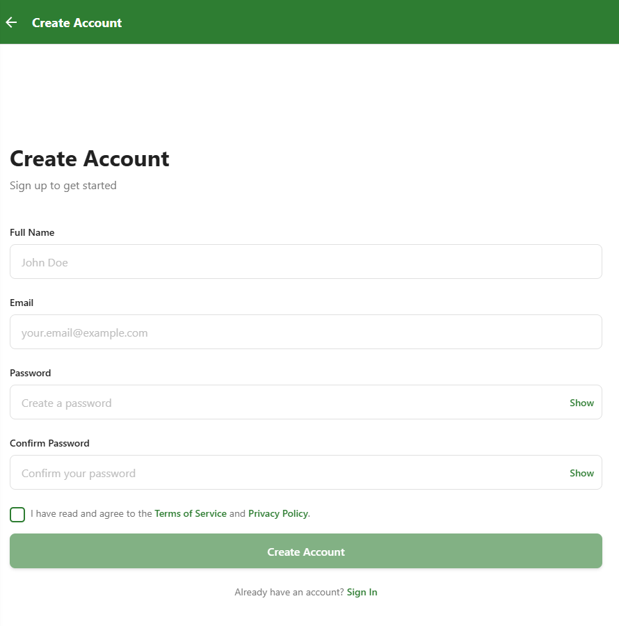
Sign in
Already have an account? Enter your email and password and tap Sign In.
The first time you sign in
The app asks what brings you here:
- Coach: you coach a squad.
- Club administrator: you run a club or coordinate its coaches.
- Supporter or parent: you follow a child's squad.
If you have an invite code, tap "Have an invite code? Enter it here" instead. The next page, Join your squad, explains invites.
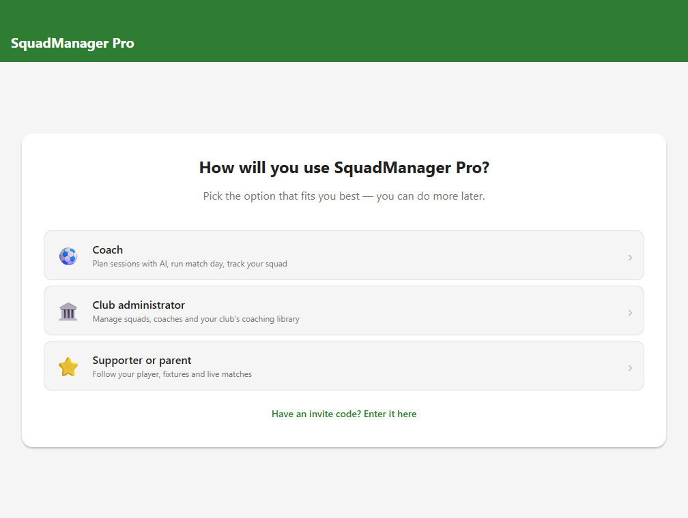
Join your squad
You've been invited
Your club's admin, or another coach on your squad, sends you an invite email.
- Open the email on your phone and tap Open App & Join Squad (an invite from your club's licensing page says Open App & Join).
- Sign in, or create an account with the email address the invite was sent to.
- The app shows Enter Invite Code with your code filled in. Tap Activate.
On a computer, the email's link opens a page with "On a computer? Use the web version", which opens the desktop app with your code ready.
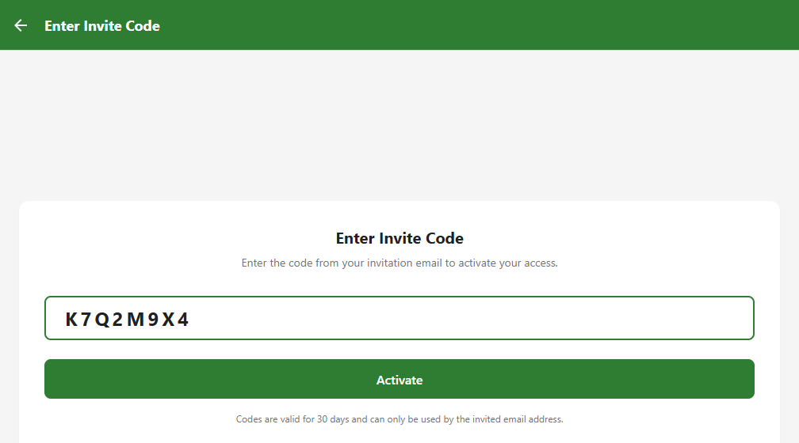
You can also type the code yourself: on a phone, open the ☰ menu and tap Enter Invite Code. Codes only work for the email address they were sent to, and squad invite codes last 30 days. If yours has expired, ask for a new one.
If your club has a licence
When your squad belongs to a club with a SquadManager Pro licence, you get one of the club's coach seats automatically as you join. You don't need your own subscription.
If the club has no coach seats free, you still join the squad. The app tells you, and lets your club admin know, so they can free one up. Some features are limited until then.
No invite?
You can start your own squad: open the ☰ menu and tap Create Squad. A brand new coach also sees "Plan Your First Session" on the home screen, with "Find an existing squad instead" if your squad already exists in the app. Find a Squad (in the ☰ menu) lets you ask to join a squad; one of its coaches approves you.
Phone and computer
SquadManager Pro runs on your phone (iPhone or Android) and in a web browser on a computer, at squadmanagerpro.bworthyintelligence.com/app. Your squads, sessions and notes are the same on both.
Most things work in both places. A few differ.
Phone only:
- Recording a live match. You can watch a live match on a computer, but recording one needs the phone app.
- Buying a subscription or drill pack (through the App Store or Google Play). Once bought, it works on the computer too.
Computer only:
- The diagram editor, for drawing drills on a pitch. Phones have a simpler drawing tool.
Other differences:
- Enter Invite Code is in the phone's ☰ menu. On a computer, use the link in your invite email.
- The computer asks you to confirm your password before club changes. When a club admin assigns or revokes a licence seat, changes the club's admins, the season or squad defaults, or manages a squad at club level, a "Confirm it is you" box asks for your password. It won't ask again for 10 minutes. Phones don't ask.
- The computer signs you out after 12 hours, so a shared computer doesn't stay signed in.
The ☰ menu on a phone is the left-hand menu on a computer.
Subscriptions and Club Licences
Anyone can use the basic features of SquadManager Pro for free. To unlock the full suite of the app's features you'll need a subscription or to be assigned a seat on your club's licence.
Three ways to use the app
- Free. The app's basic features, with some limits (refer below).
- Your own subscription, bought in the phone app: ☰ menu, Subscribe. There are three plans:
- Supporter: for parents following a player.
- Coach: unlimited AI planning, built around your playing philosophy.
- Club Admin: everything in Coach, plus club tools.
- A club seat. If your club has a SquadManager Pro licence, its coaches, admins and (where the club chooses) parents get a seat on it, which includes everything a subscription does. You don't pay anything yourself. Coaches get a seat automatically when they join a club squad; see Join your squad.
What's free, and what needs a subscription or seat
| Free | Subscription or club seat | |
|---|---|---|
| Core features (e.g. training sessions, matches, etc.) | ✓ | ✓ |
| Live match recording | 5 matches | Unlimited |
| History (stats, past sessions and matches) | The last 30 days of the current season (nothing is deleted) | Every season |
| Playing philosophy | The starter philosophy | Write your own; the AI uses it in every plan |
| Squad theory and team agreement | Read only | Edit |
| AI tools (session planner, match prep, match analysis, season review) | 2 uses every 30 days (10 for your first 14 days) | Unlimited (fair use) |
| On-pitch impact analytics | ✓ | |
| Desktop diagram editor | ✓ | |
| Pro Drill Library | ✓ |
For parents: following your child, their profile, the schedule, results, stats, public notes and match reports are free. Watching live matches as they happen is free for your first 2; after that it needs a Supporter subscription or a supporter seat from your club. The live score and the match report after the final whistle are always free.
Good to know
- Subscriptions are bought on a phone (App Store or Google Play). The computer version uses the same subscription once you've bought it. Plans renew yearly; cancel any time in your phone's store settings. Restore Purchases on the plans screen brings back a subscription on a new phone.
- If your club's licence lapses, everything keeps working for a short grace period, then seat holders move to the free version until it's renewed. Nothing you've recorded is lost.
- Clubs wanting a licence for all their coaches and parents can email info@bworthyintelligence.com.
A typical week in the app
A few minutes around each training session and each game is all it takes.
| When | What you do | Page |
|---|---|---|
| Before training | Check the session plan. If your club schedules plans, it's already there. | Your session plan |
| At training | Take attendance. | Attendance |
| After training | Tap Mark as run, rate the drills if asked, and write a short training reflection. | Mark a session as run, Training reflection |
| Before the game | Set the line-up and plan fair minutes with the ⏱ Sub Planner. If you like, get talking points from 🤖 AI Match Prep. | Match day |
| During the game | Record it live on your phone, or jot down the goals to add afterwards. | Match day |
| After the game | Add the goals and the score, then a short match reflection. | After the game, Match reflection |
At the start of the season, put your squad's sessions in once with a weekly repeat: see Schedule your sessions.
Finding your way
Your home screen
When you coach one squad, your home screen is that squad's dashboard ("My Squad"). Coach more than one and you'll see "My Squads", a card for each; tap one to open it.
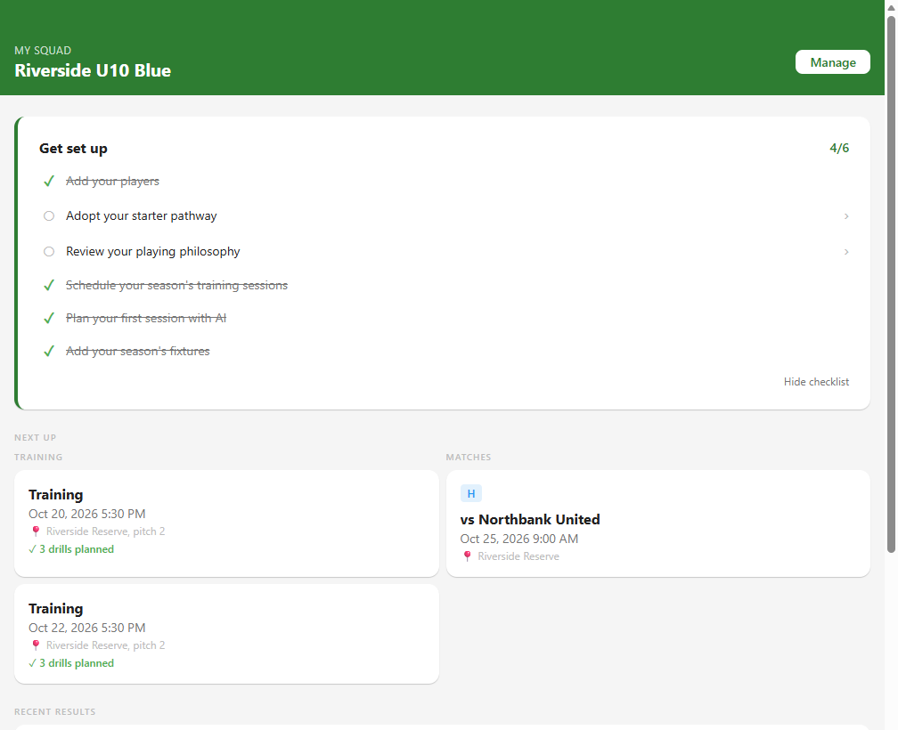
From top to bottom:
- Manage (top right) opens your squad page, where all your squad's features live (see below).
- Get set up: a checklist for a new squad. Each item opens the screen that does it, and ticks itself off when done:
- "Add your players": see Add your players
- "Adopt your starter pathway": see Development plan
- "Review your playing philosophy": see Playing philosophy and squad theory
- "Schedule your season's training sessions": see Schedule your sessions
- "Plan your first session with AI": see AI Session Planner
- "Add your season's fixtures": see Add your fixtures
- Hide checklist: once you're comfortable finding your way around, tap it to tidy the checklist away. A slim "Setup checklist" row stays, with Show to bring it back, until all six are done.
- NEXT UP: your next two training sessions and next two matches. A session with no drills yet says "⚠ Tap to plan drills"; tap any card to open it.
- DEVELOPMENT PATHWAY: once you've set up your development plan, how far your squad has come.
- RECENT RESULTS: your last three results; tap one to open the match.
- QUICK ACTIONS: shortcuts to ✨ AI Session, 👤 Add Player, 📅 New Session, ⚽ Log Match, 📥 Import Match and 📚 Drills.
- RECENT ACTIVITY: the latest notes on your sessions.
Pull the screen down to refresh it.
Your squad page
To use the full set of coaching features for your squad, tap Manage on your home screen.
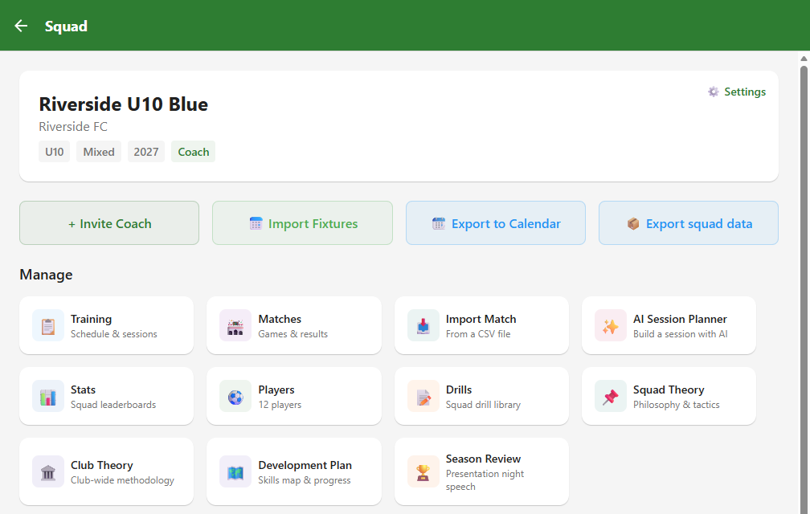
Across the top:
- + Invite Coach: invite another coach to help run the squad (Invite another coach).
- 📅 Import Fixtures: bring in your season's matches from your league's website (Add your fixtures).
- 📆 Export to Calendar: save your matches to Apple, Google or Outlook calendars.
- 📦 Export squad data: a zip of spreadsheets with your squad's players, matches, minutes, attendance, sessions and notes. It holds children's personal information, so store it carefully.
- ⚙️ Settings (top right of the squad card): the squad's name, club, age group, skill level, players per side, and who sees ratings, analytics and match reports.
Under "Manage":
| Card | What it's for |
|---|---|
| Training | Your sessions: schedule them, plan them, take attendance, mark them run. |
| Matches | Your matches: line-ups, rotations, live recording, scores and reports. |
| Import Match | Bring in a match recorded in another app (Import a match). |
| AI Session Planner | Build a whole session with AI (AI Session Planner). |
| Stats | Squad leaderboards: games, minutes, goals, attendance and more (Stats). |
| Players | Your players: add, edit, invite their parents (Add your players). |
| Drills | Your squad's drill library (Find drills). |
| Squad Theory | Your playing philosophy and team theory (Playing philosophy and squad theory). |
| Club Theory | Your club's coaching methodology (squads in a club). |
| Development Plan | What your squad is learning this season (Development plan). |
| Season Review | Your end-of-season presentation speech (Season review). |
Further down: "Join Requests" waiting for your approval, "Members" (the squad's coaches and supporters), and 🔄 Start New Season for the end of the season (Start a new season).
The ☰ menu
On a phone, tap ☰ at the top left; on a computer the same menu runs down the left of the screen. It has this Guide, Checks and Qualifications, Create Squad, Find a Squad, Notification Preferences, Give Feedback, and the privacy and safety links. On a phone it also has Enter Invite Code and Subscribe.
Add your players
Open your squad's Players card.
Paste in your whole squad (quickest)
- Tap Import list (or "Import from a list" when the squad is empty).
- Paste your squad list: one player per line, first name then last name. A list copied from your team chat or registration list works; numbering and bullet points are tidied away for you.
- Check the preview ("N players ready to import") and tap "Add N players".
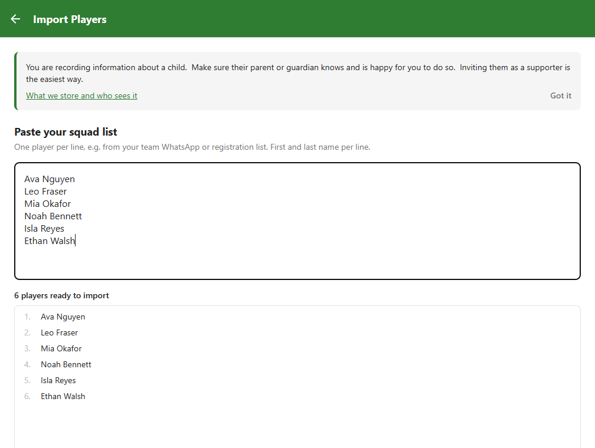
Only names come in this way; add shirt numbers and positions afterwards by editing each player. Up to 60 players at a time.
Add one player
- Tap + (or Add players).
- Enter First Name and Last Name, and if you like a Shirt Number and their Preferred Positions.
- Turn on Fill-in Player for a guest borrowed from another squad (fill-ins are thanked as a group in the season review).
- Tap Add Player.
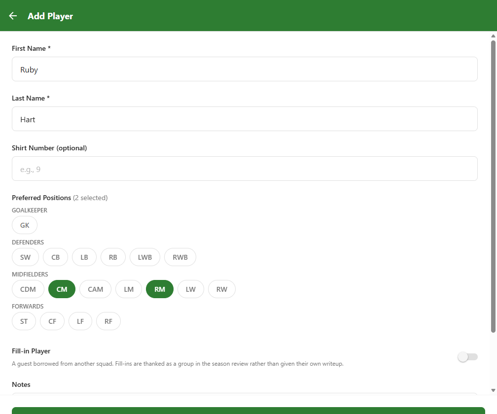
A player's page
Tap a player to see their details, training attendance, match stats, positions played and skill ratings, plus your coach-only notes on them. The buttons at the bottom:
- Invite Supporter: invite their parent (Invite parents as supporters).
- Edit Player: change their name, number, positions or notes, then Save Changes.
- Archive Player: for a player who has left. They keep their history and stats but leave line-ups and registers; Restore Player brings them back.
- Transfer to Another Squad: move them to another squad you coach. Their history stays with the season it happened in, and their supporters move with them.
- Remove Player: deletes them completely. Archiving is usually better.
Schedule your sessions
Open your squad's Training card.
The whole season at once
Tap ↺ Recurring, then fill in:
- Session Title (it starts as "Training"),
- Days of Week (pick more than one if you train twice a week),
- Time, Start Date and End Date,
- Duration (min) and Location.
The screen lists the sessions it will create. Tap "Create N Sessions", then Create.
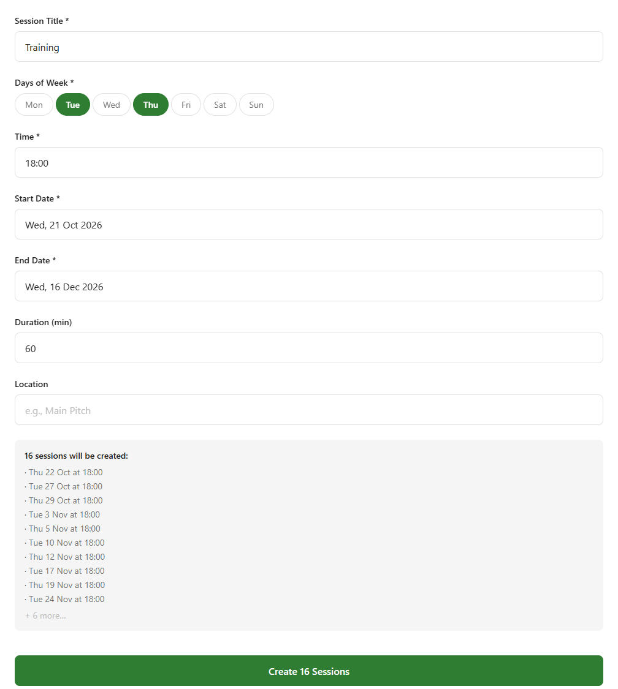
If your club schedules plans, they land on these sessions automatically.
One session
Tap +, fill in Title, Date and Time (and Duration (min) and Location), then Schedule Session. Turn on Repeat to make it weekly or fortnightly until an End Date.
Rained out?
Open the session and tap Cancel Session. It asks first. If your club scheduled a plan on it, the plan moves to your next session, and the rest move along.
Add your fixtures
Import from your league's website
On your squad page, tap 📅 Import Fixtures.
- Paste your league's fixtures page address into LEAGUE URL and tap Fetch. Some league sites take a minute or two to read.
- If the fixtures show the wrong team, open "Fixtures showing wrong team?" and enter your team's name exactly as the site shows it.
- Check the list ("N fixtures found"). New and changed fixtures are ticked; unchanged ones are tucked away.
- Choose the match type (League, Cup or Friendly) and the half length.
- Tap "Import N matches".
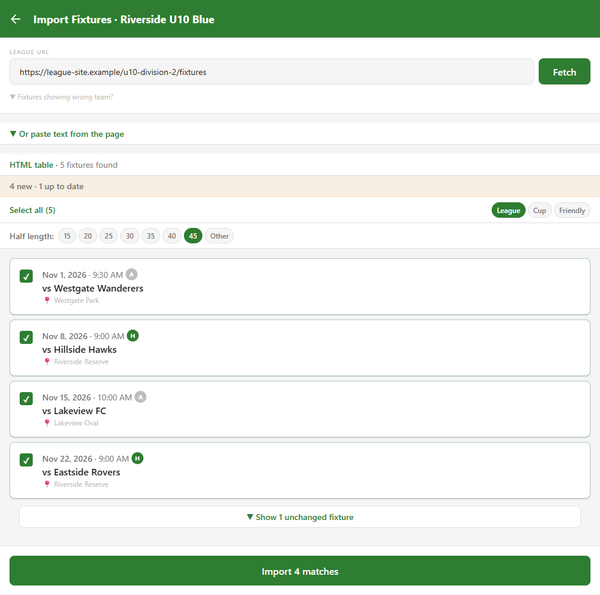
If the site can't be read, the paste box opens: open your league page in a browser, copy just the fixtures table, paste it in and tap Parse Fixtures.
Later in the season, tap 📅 Re-import Fixtures to pick up changes: moved dates, new kick-off times or venues are flagged ("⚠ Date moved", "Time changed"). Matches no longer on the league site can be marked cancelled. Importing again updates your matches; it never doubles them up.
Add one match
On your Matches list, tap + (or ⚽ Log Match on your home screen):
- Enter the Opponent, Date and Kick-off, and the Location if you like.
- Choose Home, Away or Neutral, and the Match Type (League, Cup, Friendly or Practice).
- Check the Half Length (minutes).
- Tap Create Match.
Add matches to your calendar
On your squad page, 📆 Export to Calendar makes a calendar file of your upcoming matches (or a date range) for Apple, Google or Outlook.
Development plan
The development plan is a map of the topics your squad is working on, such as first touch, passing, defending one-on-one, and how far along each one is. It guides your session planning and the AI's suggestions.
Start from a starter pathway
- Open Development Plan on your squad page (or "Adopt your starter pathway" on the checklist).
- Tap "Start from the … pathway".
- Pick the level that fits your players ("Where are your players at?"). The app suggests one from your squad's age and skill level:
- "First Kicks": completely new (typically 5 to 7)
- "Foundations": learning the basics (7 to 9)
- "Pre-Competitive": getting ready for real games (9 to 11)
- "Competitive Juniors": playing weekly matches (11 to 14)
- The topics appear on your map, all "Not started". Remove any that don't fit your squad.
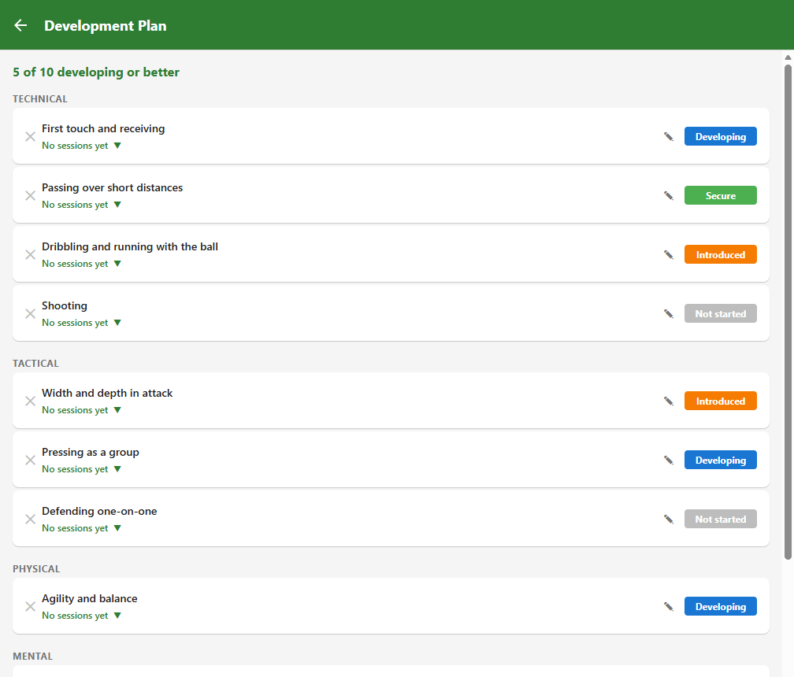
Keep it up to date
- Tap a topic's stage to move it on: Not started, Introduced, Developing, Secure.
- Tap a topic to see the sessions linked to it and its progress history.
- ✎ edits a topic, ✕ removes it, and ＋ Add item adds your own.
With a Coach subscription (or a club seat), the app can also build the map from your playing philosophy, and suggest progress from your sessions for you to Confirm or Dismiss.
Playing philosophy and squad theory
Open Squad Theory on your squad page. Everyone in the squad can read it; coaches edit it.
Your playing philosophy
Your playing philosophy is how your team plays and what you value. It shapes every AI session plan, team talk and review.
- Apply starter philosophy puts in a ready-made philosophy for your squad's level. That's enough to tick "Review your playing philosophy" on your checklist.
- Write your own or Edit lets you describe your team's style: pressing, possession, what you value in attack and defence (Coach subscription or club seat).
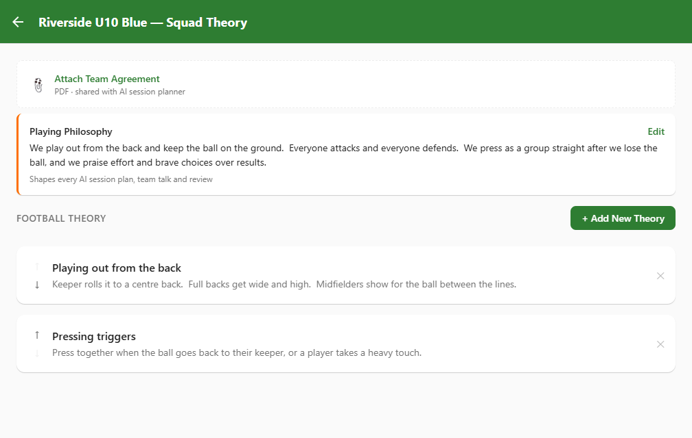
Team agreement
📎 Attach Team Agreement / PDF attaches your squad's team agreement (a PDF), which the AI session planner then takes into account.
Football theory
+ Add New Theory adds a topic your squad works on, such as possession or defensive shape, with a Heading and Theory Notes. After saving, add up to five diagrams to it: an image, a PDF or a drawing. Reorder topics with ↑ and ↓.
Invite another coach
- On your squad page, tap + Invite Coach.
- Enter their email address and tap Send Invite.
- They get an email with an 8-character code; see Join your squad for their side.
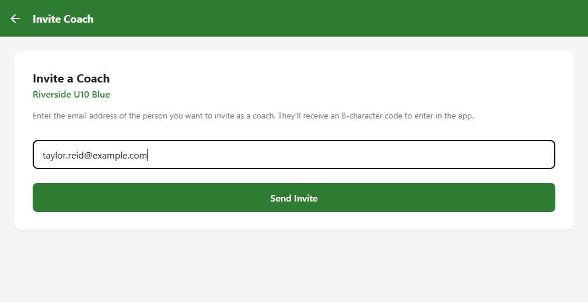
Under "Pending Coach Invites" you can Resend an invite or Cancel it. If the email can't be sent, the app shows the code so you can pass it on yourself.
If your squad belongs to a club with a licence, the new coach gets one of the club's coach seats as they join.
Requests to join: coaches and parents who ask through Find a Squad appear under "Join Requests" on your squad page; Approve or Decline. Approving a coach asks you to confirm, because coaches see everything about the players.
Invite parents as supporters
- Open your squad's Players, then the child's page.
- Tap Invite Supporter, enter the parent's email and tap Send Invite.
- They get an email to join as a supporter of that child. See Following your child's squad for what they do next.
If your club has a licence with supporter seats, Assign Supporter Seat on the child's page sends the invite with a seat, so the parent needs no subscription.
The child's page shows who's following under "Supporters Following" (coaches only).
Requests to join: parents who ask through Find a Squad appear under "Join Requests" on your squad page. Approve or Decline. They aren't linked to a child that way, so an invite from the child's page is better.
Checks and qualifications
Both live in one place: open the ☰ menu and tap Checks and Qualifications.
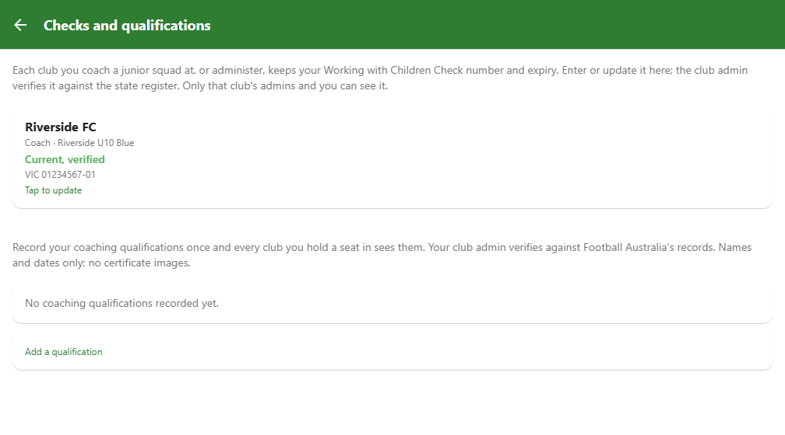
Your Working with Children Check
Each club you coach a junior squad at (or help run) keeps your check's number and expiry. Its card appears once you're a coach in that club.
- Tap your club's card ("Tap to update").
- Choose the Scheme: your state's check, for example "Victoria (WWC Check)", or "Other or exemption".
- Enter your Card or application number and the Expiry date (DD/MM/YYYY).
- Add a Note (optional) if something needs explaining, such as an exemption.
- Tap Save.
Your club admin then checks the number on the state register and marks it verified; the card shows "Current, verified". Only your club's admins and you can see it, and only numbers and dates are kept, never a photo of your card. If your check is renewed, update the number or expiry the same way (the club verifies it again).
Your coaching qualifications
Record each coaching qualification once; every club you hold a seat in sees it.
- Tap Add a qualification.
- Choose the Track: "Outfield coaching", "Goalkeeping", "Futsal" or "Other federation".
- Choose the Level held.
- Optionally add when it was Issued, when it Expires or revalidation due, and a note.
- Tap Save.
Your club admin verifies it against Football Australia's records. Names and dates only; no certificate images.
Notifications
Open the ☰ menu and tap Notification Preferences.
On by default:
- Squad Management: join requests, approvals and squad invites.
- Reminders: training and match reminders, 24 hours and 2 hours before.
- Match Results: when a match result is posted.
- Notes & Comments: new notes on sessions and matches you can see.
- Coaching Nudges: plan-your-session and post-match prompts.
- Club Plans: club plan news, including "Club plans added" when your club schedules plans onto your sessions.
Off by default: Live Match Events (goals, half time and red cards as they happen) and Player Development (new skill ratings for players you follow).
Notifications arrive on phones (iPhone and Android). If they don't, check your phone's own notification settings for SquadManager Pro.
Your session plan
Open the session from your squad's Training card (or NEXT UP on your home screen). There are four ways to get a plan onto it:
| Way | Best when | Effort |
|---|---|---|
| Your club's schedule | Your club plans the season for you | None: it's already there |
| Load Club Plan | You want one of your club's plans on this session | A few taps |
| Build it yourself | You know what you want to run | Pick each drill |
| AI Session Planner | You want a fresh session around a focus | Answer a few questions |
You can mix them: load a club plan, then add or swap a drill yourself.
Your club's schedule
If your club schedules its plans, the plan is already on your session, with a banner: Club plan "<name>", from your club's schedule. You'll get a "Club plans added" notification when new ones arrive. Change anything you like: the banner then says "adjusted for this session", and your club can see it was adjusted.
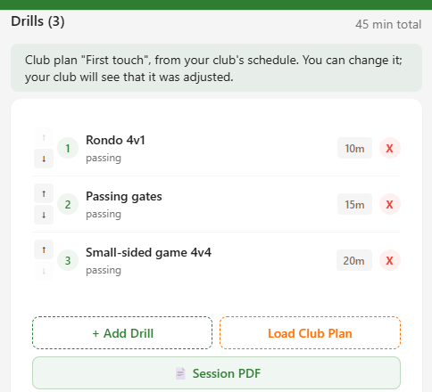
Load a club plan
- Tap Load Club Plan (squads in a club).
- Pick a plan. "CLUB PLANS" are your club's own; "SHARED BY CLUB ADMIN" are plans other squads made that your club approved.
- Check the drills in the preview, then tap Load into session. If the session already has drills, choose Append to session (add after them) or Replace session (swap them out).
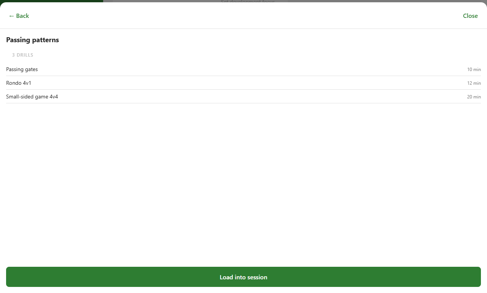
Build it yourself
See Build a session yourself: add drills from the library, set their times and order, and add a plan title and notes.
Let the AI plan it
See AI Session Planner: choose a focus (or let the AI suggest one from your recent notes), set the length and style, and it designs the whole session.
Build a session yourself
Add drills
- On the session, tap + Add Drill.
- Find a drill:
- type in Search drills... to search by name;
- tap Filters to narrow by level, skills, tactical focus, or your ♥ Favourites only;
- sort By level or Most used (by your squad).
- Tap a drill to add it. It goes on the end of the session with its usual time.
- Repeat for each drill.
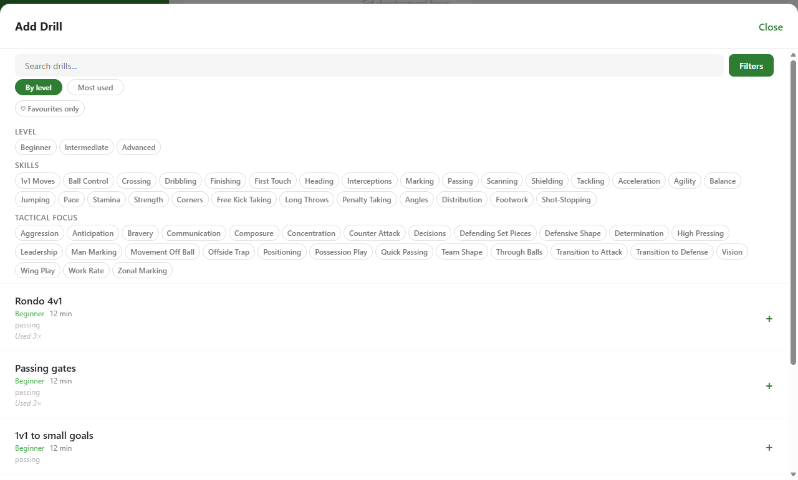
Drills already in the session aren't listed again.
Set times and order
- Time: tap a drill's time (for example "15m"), type the minutes and tap Save. The total shows at the top ("45 min total").
- Order: use ↑ and ↓ beside each drill.
- Remove: tap X, then Remove.
- Look at a drill: tap it for its set-up, instructions, coaching points, variations and diagrams.
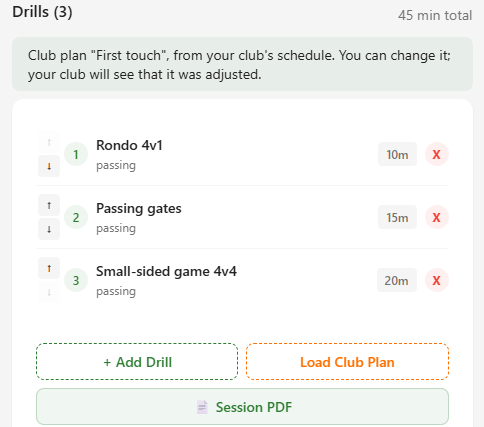
Name the plan
In "Training Plan", tap Edit, give it a Plan Title (and Plan Notes for goals or reminders), then Save Plan. A named plan can be reused, and (in a club squad) shared with your club using Submit Plan to Club; once approved, other squads in your club can load it.
Change the session itself
Edit Session (at the bottom) changes the title, date, time, duration and location. Under "Develops", link the session to a topic on your development plan.
Next
Share the plan with your helpers, then take attendance at training.
AI Session Planner
Open AI Session Planner on your squad page (or ✨ AI Session on your home screen).
1. Choose a focus
Either:
- "I know what to focus on": type your Focus area (for example "1v1 defending" or "switching play") and tap Continue to Session Builder; or
- "I want AI to recommend a focus": tap Analyse My Sessions. The AI reads your recent training and match notes (coaches-only ones included) and suggests two or three focus areas, ranked, with its reasons. Tap Plan this session on the one you want.
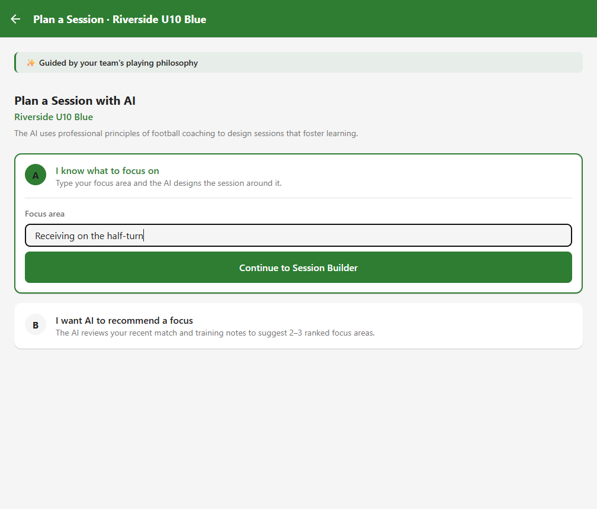
If you've planned this focus before, the app offers your earlier plans first; Use This Plan reuses one without using an AI turn, or carry on to create a new one.
2. Set the session up
- Session Duration: 30 to 90 minutes.
- Session Approach: "Play-Practice-Play" (game, isolate the skill, back to the game), "Progressive Drills" (simple to complex to game), or "AI Decides".
- Four Corners Focus (optional): Technical, Tactical, Physical or Mental.
- Level of Intervention: one player, a small group, or the whole team.
- Optional: player count, age group, constraints (such as space or equipment) and anything else the AI should know.
Tap Generate Session Plan. It takes 10 to 20 seconds.
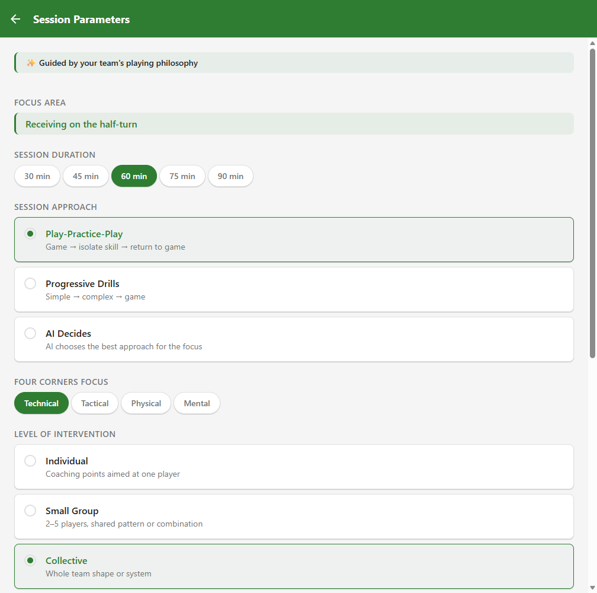
3. Review the plan
The plan has up to five activities. Open each for its organisation, instructions, safety notes, coaching cue and how to make it easier or harder. Drills from the library show what to change for today; new drills the AI designed are marked "New drill".
- Don't like one? Remove this drill, then Suggest a replacement or Spread the time across the others (up to three swaps per plan).
- Add your own notes under "Your Notes".
- Edit Plan lets you change the plan before saving.
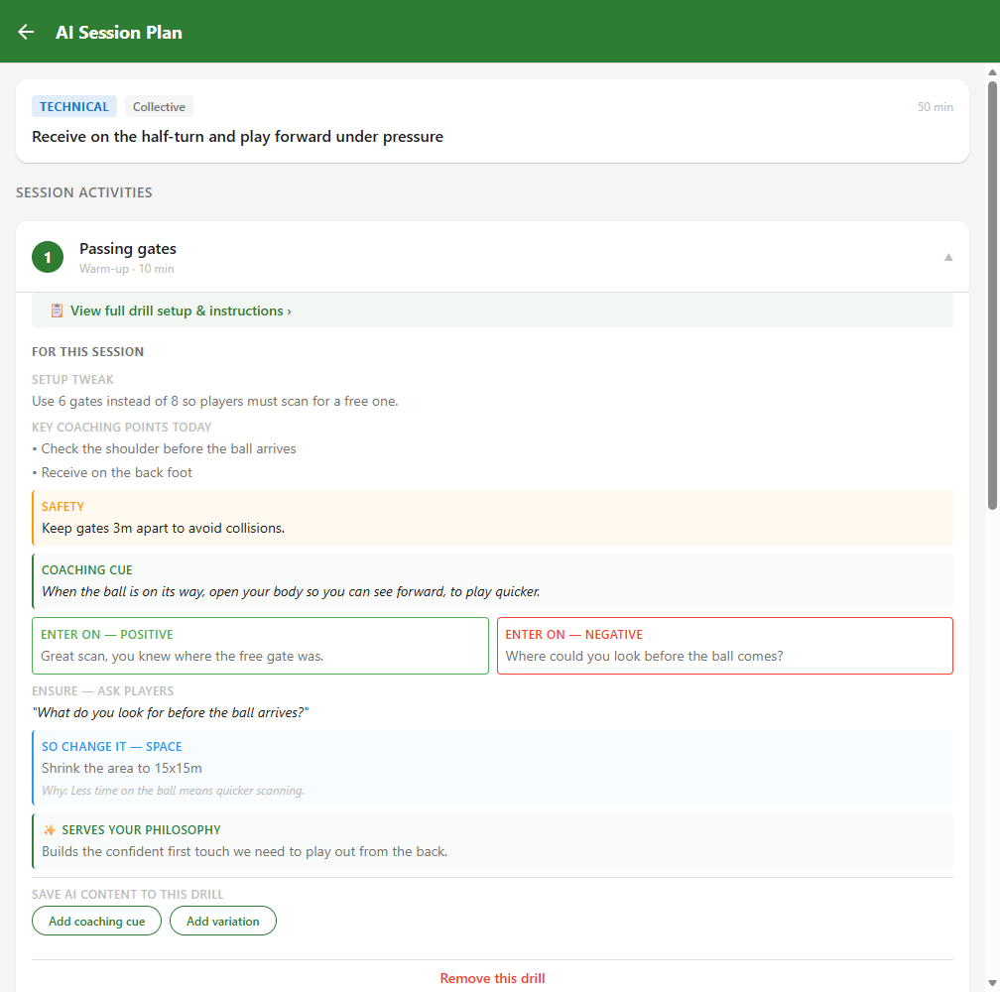
4. Save and schedule
Tap Save as Training Plan, then 📅 Schedule this session: attach it to one of your upcoming sessions that has no plan yet, or + Add a new session instead with a date and time. The session then carries the AI's coaching notes on each drill.
How many? Free: 2 AI uses every 30 days (10 in your first 14 days). With a subscription or club seat: unlimited, within fair use. The count shows under the button. With a subscription or club seat, the plan is also built around your own playing philosophy.
Find drills
Open Drills on your squad page. It lists every drill you can use: the public library, your club's drills, your squad's own and any drill packs you have.
Narrow it down
- Search by name or description.
- Level chips across the top: First Kicks, Foundations, Pre-Competitive, Competitive Juniors (it starts on your squad's).
- Filters: ♥ Favourites only, "What to teach" (topics such as passing, pressing or goalkeeping), and under Show advanced filters the level, skills and tactical focus.
Tap ♡ on a drill to favourite it.
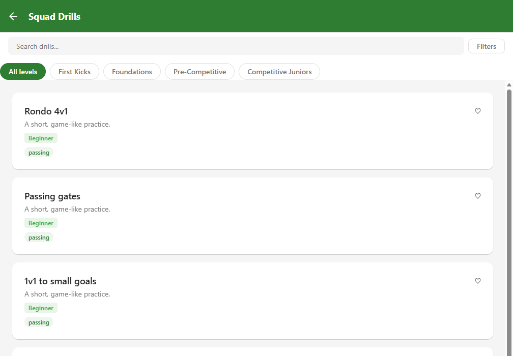
A drill page
Tap a drill to see its diagrams, description, set-up, instructions, coaching points, variations, the skills and tactics it develops, video links, and how often your squad has used it. 👍 or 👎 tells the club how it went.
To use a drill, add it from the session (+ Add Drill): see Build a session yourself.
Your own drills
The + button makes a new drill for your squad (or your club). See Create a drill for every field, and drawing the diagram.
Share the plan (optional)
- On the session, tap 📄 Session PDF.
- When "Session PDF ready" appears, tap Share and send it through your team's usual group chat, or Save it.
The PDF shows the session's drills, timings and diagrams.
Attendance
- On the session, find Attendance.
- Tap All present.
- Change anyone who wasn't: Abs (absent), Exc (excused) or Late.
- Tap Save Attendance.
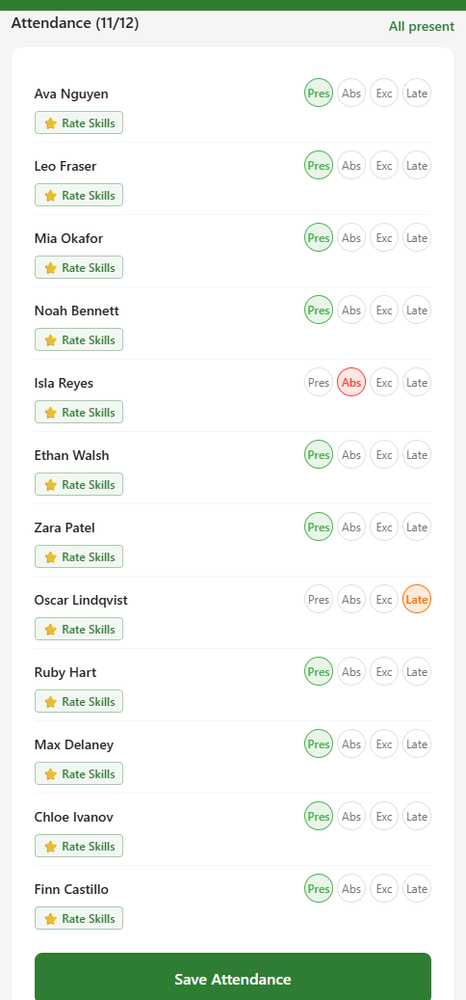
Attendance builds each player's record over the season and shows your club how sessions are going.
Mark a session as run
After training, open the session and tap Mark as run under Session Status. That's it: no confirmation needed.
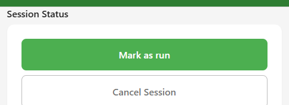
How did the drills go?
If your squad is part of a club, the app then asks "How did the drills go?". Tap 👍 or 👎 for each drill, add one optional line about what worked or what to change, and tap Save. Not now skips it. Your club's coordinator sees the answers gathered by plan, so a drill that keeps landing badly gets fixed.
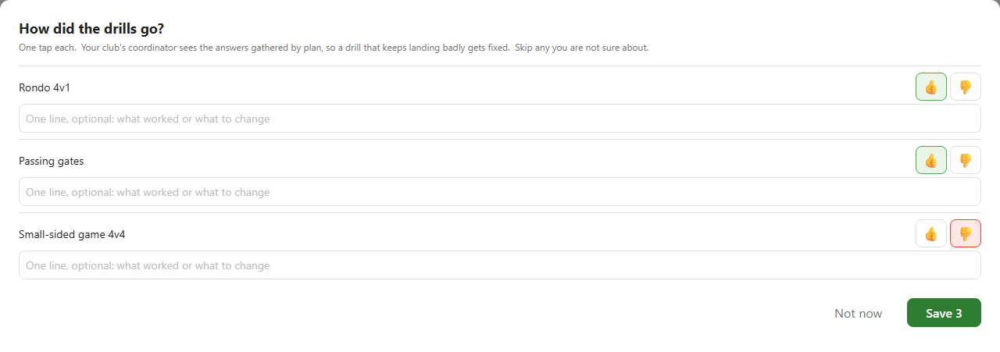
After that, the app offers your training reflection.
Tapped it by mistake?
On a completed session, tap Mark as not run. It asks first, then puts the session back to scheduled.
Training reflection
On a completed session, the Training reflection card asks: "What worked, what didn't?"
- Tap + Add reflection.
- Write a few lines. Football observations only: avoid medical or family details.
- Tap Save.
It may open for you straight after Mark as run; Not now closes it.
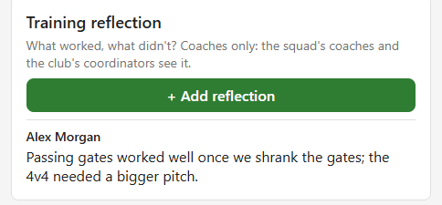
Each coach writes one reflection per session. To add more later, tap yours and Edit it. Other coaches on the squad write their own, which show beneath yours.
Who sees it: coaches only. Your squad's coaches and your club's coordinators see it; parents and players never do. Your club sees which sessions have a reflection.
Match day
Open the match from your squad's Matches card (or NEXT UP on your home screen).
The match guide
The Match guide strip at the top walks you through the day. Each step ticks when it's done, and tapping it takes you there:
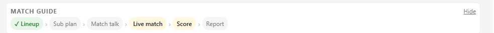
| Step | What it is |
|---|---|
| Lineup | Your formation and starting players (below). |
| Sub plan (optional) | Your rotations: Plan rotations. |
| Match talk (optional) | Pre-match talking points: AI Match Prep. |
| Live match | Recording the game: Live match. |
| Score | The result: After the game. |
| Report (optional) | The match report: AI Match Analysis. |
Hide tucks the strip away; Show match guide brings it back.
The line-up
- Pick a formation. Under Formation, tap a shape. The list shows shapes for your squad's players per side (set in your squad's ⚙️ Settings); the one you choose is highlighted, with a description underneath. Your last match's formation is used if you haven't picked one.
- Put players in. Tap + Add to Lineup, choose a position (or leave it to use each player's preferred position) and tap players to add them. + Add to Bench does the same for your substitutes, up to five. Or tap ↺ Use last match lineup to copy last week's team.
- Arrange them on the pitch. Tap a player, then tap another spot: two players swap, a player moves into an empty slot, or a bench or unassigned player comes into the starting team.
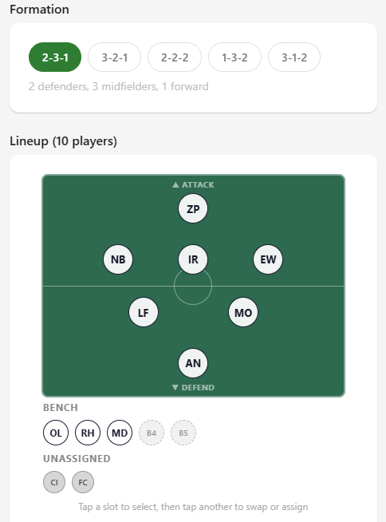
Below the pitch, the "Starting Lineup" and "Bench" lists let you remove a player (X) or give a performance rating (Rate).
Plan rotations
Tap ⏱ Sub Planner to plan substitutions so every player gets a fair share of the game. See Plan rotations.
Prepare pre-match talking points (optional)
Tap 🤖 AI Match Prep for a team talk, or a briefing for each position group or player, built from your squad's recent matches, training and playing philosophy. See AI Match Prep.
During the game
You have two choices:
- Record it live on your phone: tap ▶ Start Live Match to run the clock and record goals, subs, saves and cards as they happen. Parents can follow along live. See Live match.
- Keep it simple: jot down the goals and subs, and add them after the game.
Plan rotations
The Sub Planner works out who's on when, so everyone plays a fair share. Set your line-up first, then tap ⏱ Sub Planner on the match (or Sub plan in the match guide).
1. Set it up
- Match length: in minutes (it starts from your half length).
- Sub every: 5 min, 10 min or 15 min, or type your own.
- Stay in position groups (defenders rotate with defenders, and so on) or Rotate anywhere. With groups on, tap a player to move them between DEF, MID and FWD.
- "Rotating today": everyone in your line-up, bench included. Tap anyone who hasn't turned up to leave them out.
- Goalkeeper: GK all match, GK per half (choose a keeper for each half) or GK rotates (the keeper's spot rotates like any other).
Tap Generate plan.
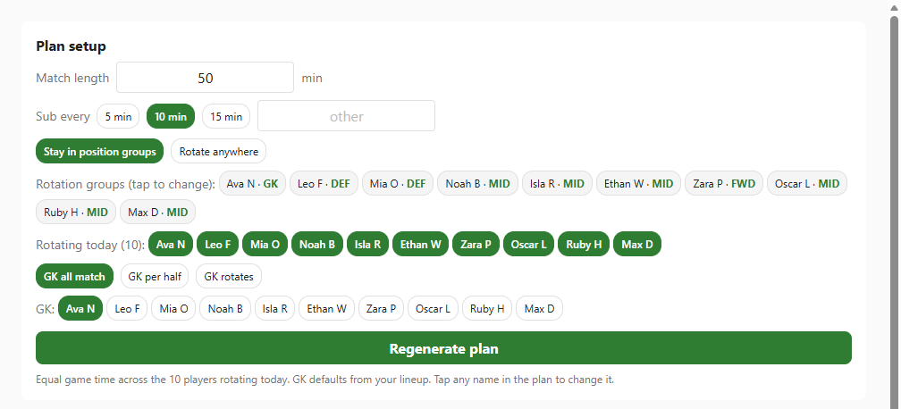
2. Check the plan
The grid shows each position for each time block. Highlighted names are coming on at that change. "Planned minutes" shows each player's total; nobody plays more than one block more than anyone else.
To change something, tap a name and pick someone else: a player already on swaps positions; a bench player comes on instead.
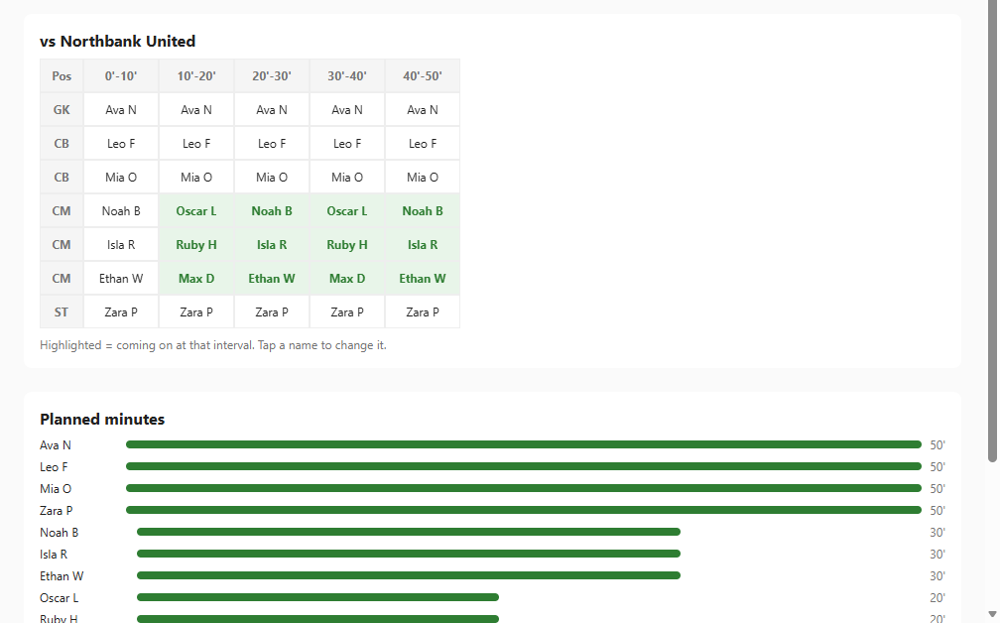
3. Save and share
Tap Save plan. Share sends the plan to your phone's share sheet (for your assistant on the sideline).
During the game
If you record the game live, each planned change pops up when it's due: "⏱ N planned subs due - tap to review". Tap Record to make the change at the current minute, or ✕ to skip it. See Live match.
Live match
Start
On the match, tap ▶ Start Live Match. The clock starts straight away and the live screen opens. Keep the app open on the sideline; the screen stays awake.

Free accounts can record 5 live matches; with a subscription or club seat, unlimited. The count shows under the button.
Record what happens
- ⚽ GOAL: pick the scorer (players on the pitch first) and, if you like, who assisted. For an own goal by the other team, choose "Own Goal". Tap Confirm Goal; the score goes up.
- OPP GOAL ⚽: the other team scored; tap Yes.
- 🔄 Sub: tick who's coming off and who's going on, check the position each new player takes, and tap Confirm Sub.
- 🧤 Save: a save by your keeper (or another player).
- 🟨 Card: yellow or red, and who. A red card takes the player off.

On the pitch view (the Lineup tab): tap a player, then another player on the pitch to swap their positions, or a bench player to sub them on.
Planned subs: if you made a rotation plan, changes pop up when they're due ("⏱ planned subs due"). Tap Record for each, or ✕ to skip.
Mistakes: on the Events tab, tap an event to change its minute or delete it (deleting a goal takes it off the score).

Half time and full time
- Tap ⏸ Half Time at the break. The squad is told the half-time score.
- Tap ▶ Start 2nd Half when play restarts. The clock carries on from the end of the first half.
- At the end, tap ■ End Match, then Full Time (or Extra Time if the game goes on).
The final score is saved, the match is marked complete and the squad gets the result. You're back on the match screen, ready for After the game.
Good to know
- No signal? Everything you record is saved on your phone first and sent when you're back online ("⚠ N events queued, syncing").
- ‹ Back leaves the live screen while the clock keeps running; open the match and tap ▶ Manage Live Match to return.
- The ⋯ menu: Edit Half Length, Advance Clock 1 Minute (if you started late), and Hand Off Recording to pass the recording to another coach.
- If the recording coach's phone drops out, another coach can take over from the match (▶ Resume Live Match).
What parents see
Approved parents and supporters tap 👁 Watch Live on the match to follow the score, clock, line-up and events as they happen, on a phone or a computer. Goals and the result also arrive as notifications.
AI Match Prep
On an upcoming match, tap 🤖 AI Match Prep (or Match talk in the match guide). Set your line-up first for the best result.
- Choose a Format:
- Team Talk: one talk for everyone;
- Position Groups: a briefing for each group (defenders, midfielders, forwards), plus a short talk for all. Change lets you move players between groups;
- Individual: a briefing for each starting player, plus a talk for all.
- Choose a Style: Speech (to read out) or Bullet Points.
- Add Coach Notes (optional): the opposition, the weather or pitch, how the last game or training went.
- Tap Generate Team Talk.
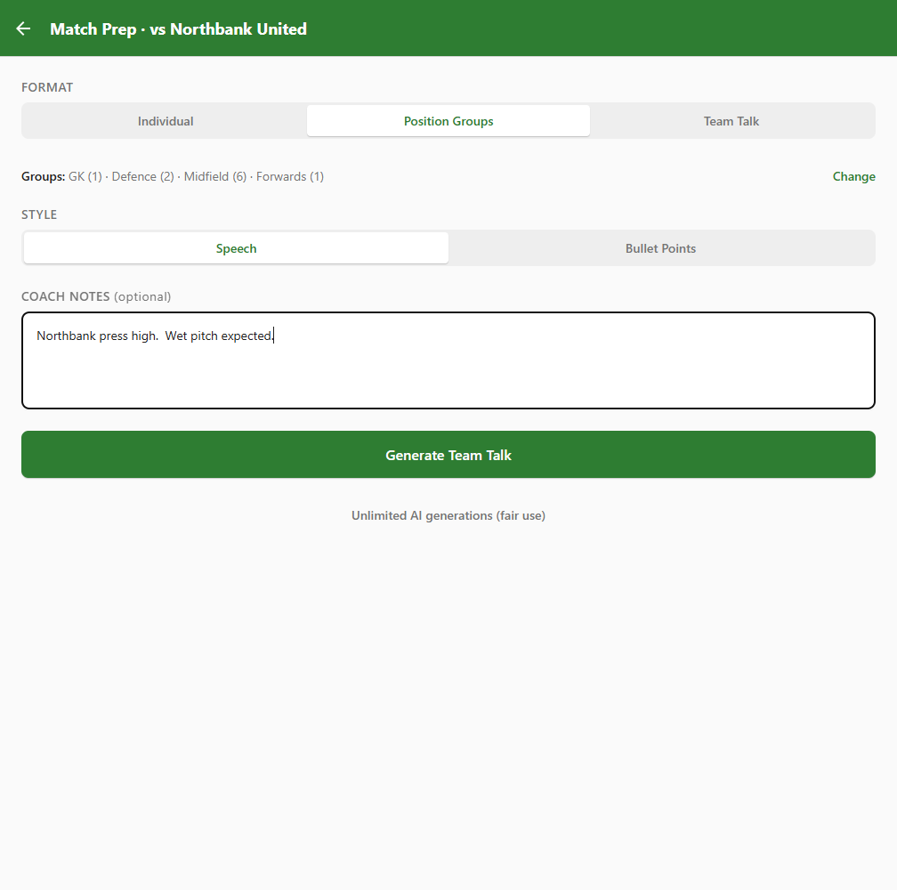
Then
- Read it through. Refine with a note of what to change (this uses another AI turn), or Edit the words yourself.
- Save keeps it in the match's notes, coaches only. Share sends the text to your phone.
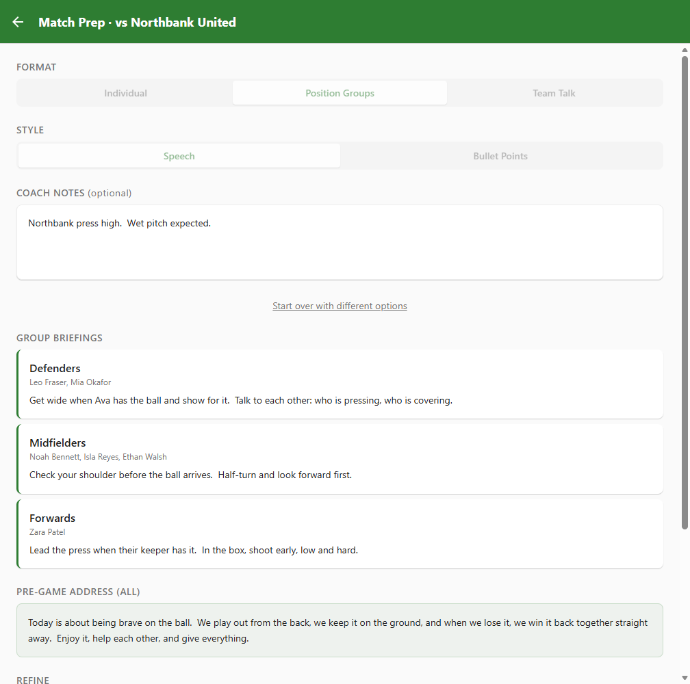
Each generation uses one AI turn: 2 every 30 days on the free version (10 in your first 14 days), unlimited with a subscription or club seat.
After the game: goals and the score
If you recorded the game live, the score and events are already in: check them and skip to the ratings. Otherwise, open the match.
The score
Under "After the match", enter Your Team and the opponent's score and tap Save Score. Once the match date has passed, saving the score also marks the match complete.
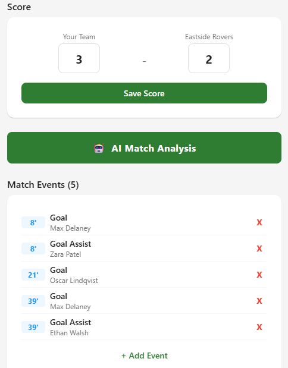
Goals and other events
- Under Match Events, tap + Add Event.
- Choose the type: Goal, Opp Goal, Sub, Shot, Save, Tackle or Note.
- Enter the Minute. Count through the whole match: with 25-minute halves, five minutes into the second half is minute 30.
- For a goal, pick the scorer (or "Team (no player)", or "Own Goal" for one the other team put in their own net) and any assists.
- Save it. After a goal, the app offers to update the score.
Tap an event to change it, or X to delete it.
Rate the players (optional)
Beside each player in the line-up, Rate gives a match rating from 1 to 10. Ratings feed your squad's stats. Who can see them is set in your squad's ⚙️ Settings.
Then
- Write your match reflection.
- Optionally, create a match report for parents with AI Match Analysis.
- Recorded the wrong thing? ↩ Reopen Match puts the match back in progress so you can carry on recording.
AI Match Analysis and match reports
On a completed match, tap 🤖 AI Match Analysis (or Report in the match guide). Make sure the goals, subs and cards are up to date first: the AI writes from them.
There are two tabs.
Match Report (for parents)
- Write Your match notes: how the game went, in your words (required).
- Tap Generate Report. You get a summary, "Positives", "Development Areas" and a "Special Mention".
- Refine or Edit it until you're happy, then save it.
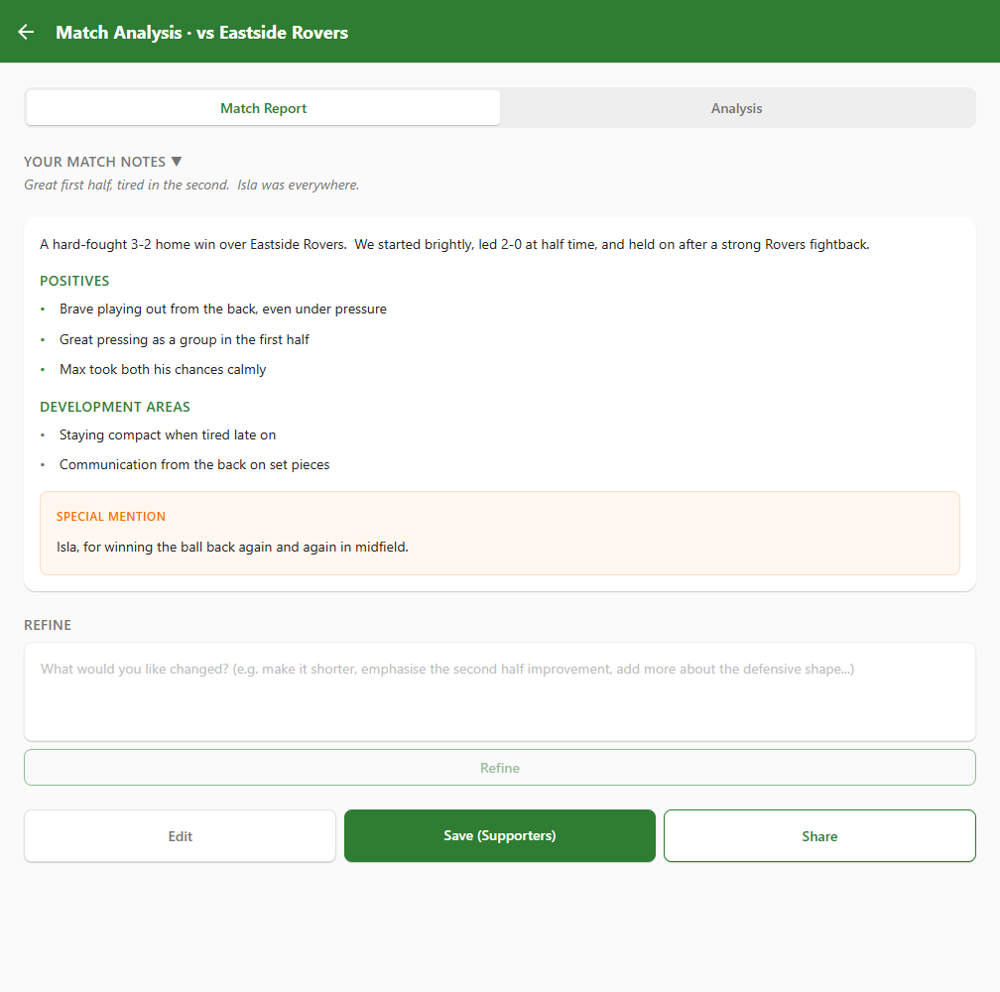
Where it goes depends on your squad's ⚙️ Settings ("Match Reports"):
- Supporters: saved for parents to read ("Save (Supporters)").
- Coaches only: saved for coaches; you can open it to parents later with Share with supporters.
You can switch either way after saving (Keep to coaches / Share with supporters).
Analysis (for you)
- Add Coach notes if you like.
- Tap Generate Analysis. You get a summary, key moments, standout contributions, areas to address and a focus for your next session.
- Save (Coaches) keeps it in the match's notes; it's always coaches only.
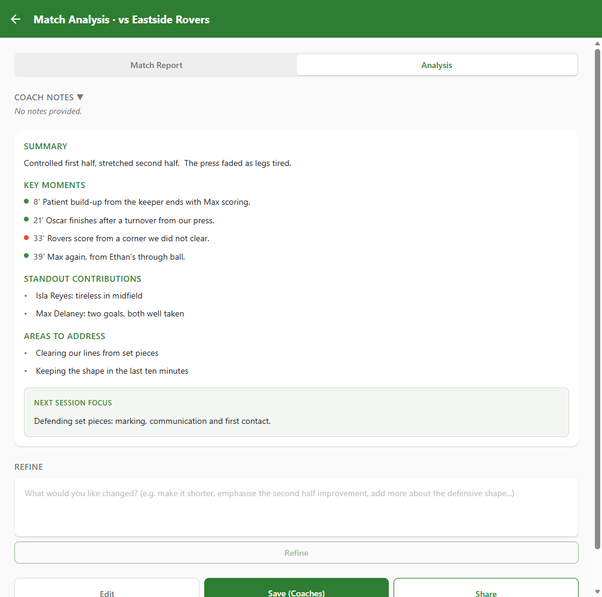
Saved reports and analyses appear in the match's "Notes & Updates". Each generation uses one AI turn: 2 every 30 days on the free version, unlimited with a subscription or club seat.
Match reflection
On a completed match, the Match reflection card asks: "How did the team play, what worked, what to work on next?"
- Tap + Add reflection.
- Write a few lines. Football observations only.
- Tap Save.
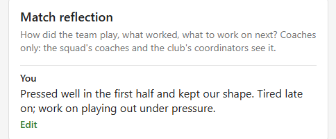
As with training, it's one reflection per coach per match (tap yours and Edit to add more), coaches only, and your club's coordinators can read it. Your reflections also help the app's match analysis and match preparation.
Import a match
If you recorded a game in another match-tracking app that exports a CSV file, you can bring it in: the line-up, substitutions, goals and score arrive as if you'd recorded the match here, and your minutes and stats include it.
Open Import Match on your squad page (or 📥 Import Match on your home screen, or on your Matches list).
- Tap Choose CSV file and pick the export. A summary shows the match, date, length and score.
- "Which match is this?": pick the match from your list (the same-day one is chosen for you), or Create a new match and check the opponent, home or away, and match type.
- "Players": each player in the file is matched to your squad by shirt number or name. Check the matches; for anyone not found, choose a squad player, Add as fill-in for a guest, or Leave out (their goals still count, without a scorer).
- "Checks": the app confirms the goals match the score, the line-up agrees at every goal, and everyone's minutes match the file.
- Tap Import match.
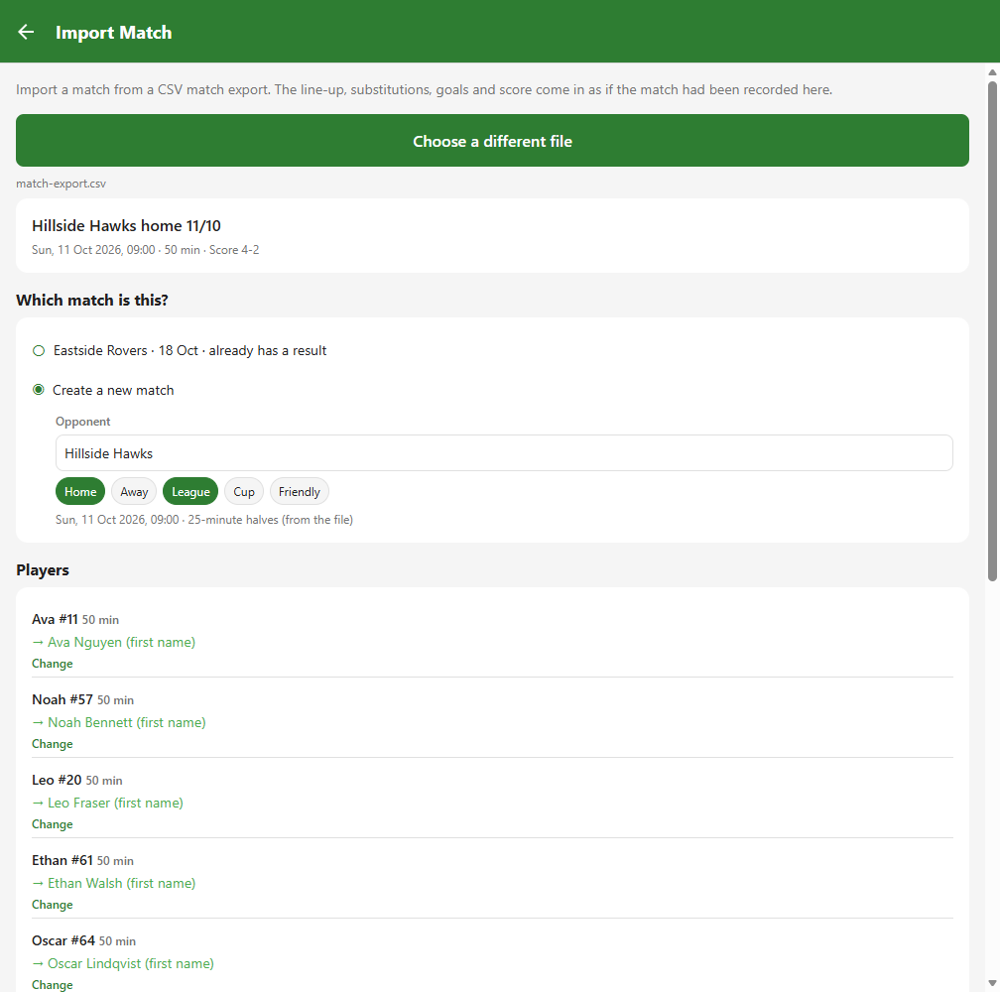
If the match already has a line-up or events, the app asks before replacing them. If the file used a formation the app doesn't list, it's kept as a custom formation, shown first on the match marked "(custom)".
When you're ready for more
Once your weekly routine is settled, these are worth a look. Each has its own page.
Planning
- AI Session Planner: a whole session designed around a focus you choose, or one the AI suggests from your recent notes. It knows your squad, your development plan and (with a subscription or club seat) your playing philosophy.
- Development plan: the season's learning topics for your squad, and how far along each one is.
- Playing philosophy and squad theory: how your team plays, written down once so your squad and the AI can see it.
Match day
- Plan rotations: fair minutes for everyone, worked out for you, with prompts during the game.
- Live match (phone): record the game as it happens; parents follow along.
- AI Match Prep: a team talk, or briefings for each group or player.
- AI Match Analysis and match reports: a report for parents and an analysis for you.
- Import a match: bring in a match recorded in another app.
Your squad
- Stats: leaderboards for games, minutes, goals, attendance and more.
- Season review: your presentation-night speech, drafted for you.
- Start a new season: roll your squad over to next season.
Stats
Open Stats on your squad page.
- Filter by match type (All, League, Cup, Friendly, Practice) and season.
- Leaderboards show the top three for each, with See all → for the full table: games played, minutes played, match performance (your ratings), goals, assists, saves, yellow and red cards, training attended, and on time.
- Tap a player for their game-by-game breakdown.
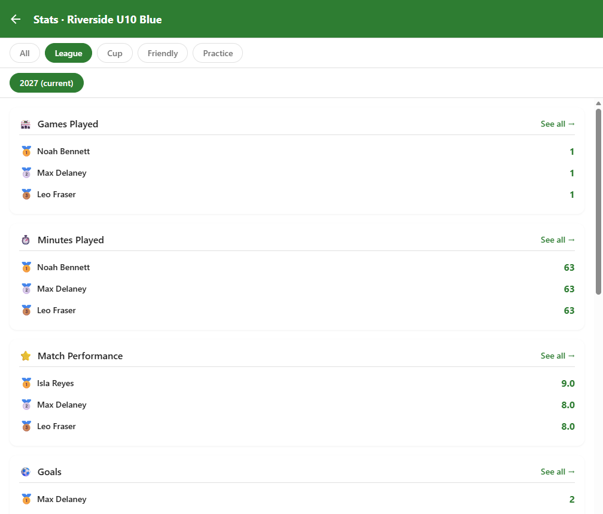
On-pitch impact (Coach subscription or club seat) shows how the team does while each player is on the pitch, their best positions and combinations. It needs matches with a full line-up and recorded substitutions.
Without a subscription or club seat, stats cover the last 30 days of the current season. Who sees ratings and impact is set in your squad's ⚙️ Settings.
Season review
At the end of the season, the app drafts your presentation-night speech: the season's story, a paragraph for each player, and closing thanks.
- Open Season Review on your squad page.
- Add any Coach Notes: award winners, funny moments, helpers to thank, a message about next season.
- Tap Generate Season Review.
- Read it through. To change something, select a player (or the whole review), write what to change, and tap Refine. Or tap Edit to change the words yourself.
- Tap Save.
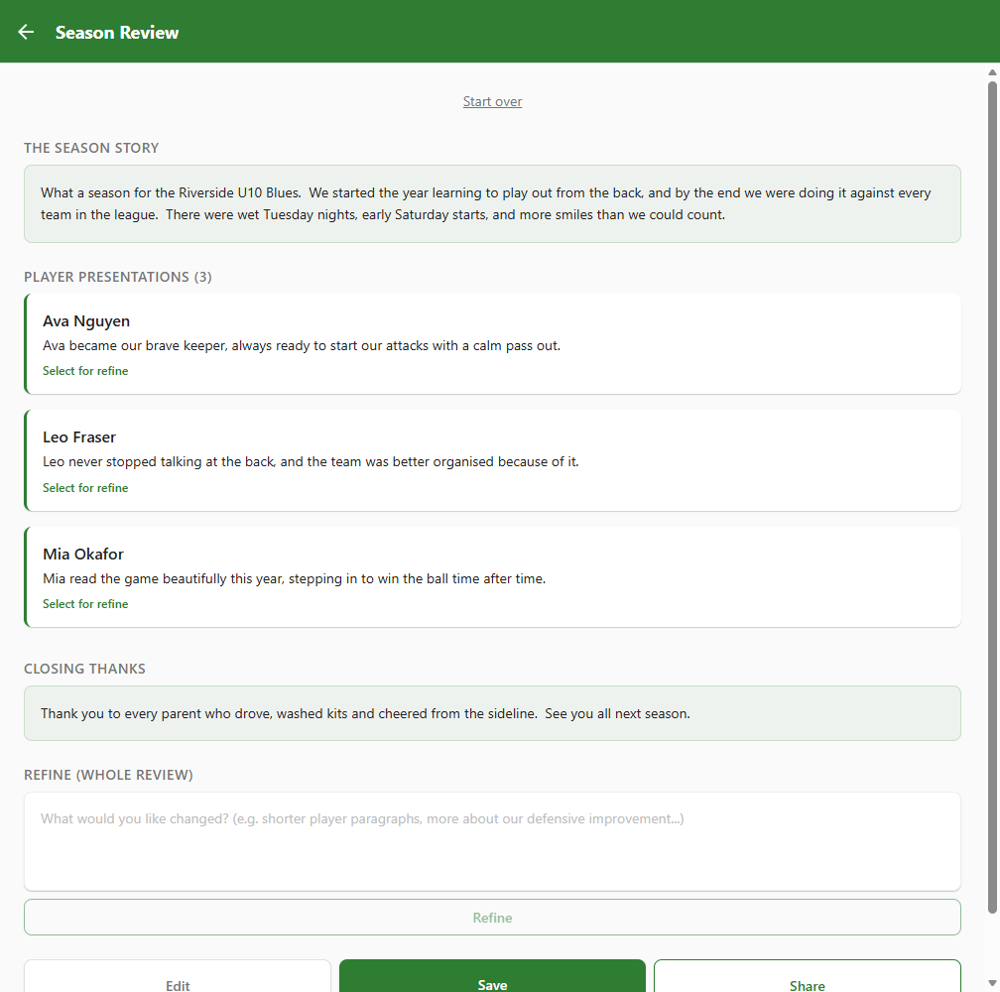
Once saved, each player's paragraph appears on their page, where their parents can read it. Share sends the whole text to your phone's share sheet, ready to print or read out.
Archived players are left out, and fill-in players are thanked as a group.
Start a new season
At the end of the season, roll your squad over: last season's record stays viewable, and the new season starts fresh. Your club may send you a nudge when its new season begins.
On your squad page, tap 🔄 Start New Season and follow the steps:
- Season review first? If you haven't written one, Generate Season Review (see Season review). Then Continue.
- The new season: its name, and the squad's new age group if it's moving up.
- Roster review: who's staying, who's leaving.
- Development map review: what carries over to next season's development plan.
- Ready to roll over: check the summary and tap Start New Season.
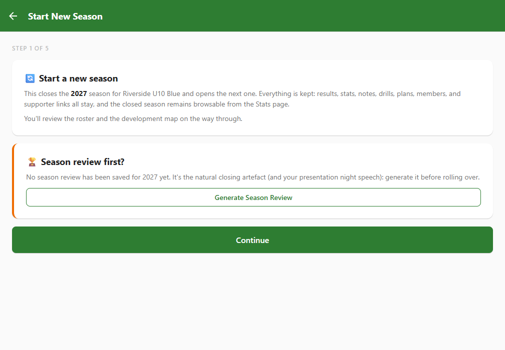
Then a checklist helps you set up: import the new fixtures, revisit your playing philosophy, add new players, and re-sign the team agreement.
Who sees what
| Who | Sees |
|---|---|
| Coaches | Their own squads only: players, sessions, matches, notes and reflections. |
| Club admins and coordinators | Every squad in their club, including coaches-only notes and reflections. |
| Supporters (parents) | Their own child's profile, the squad's schedule, results, live matches and stats, and the squad's public notes (plus any note written for their child). Never coaches-only notes or reflections. |
Choosing who sees a note
When you add a note (+ Add Note), its Visibility sets who reads it:
- Coaches only (the default for coaches): the squad's coaches and the club's admins.
- Public: everyone in the squad, parents included. Parents can react and comment.
- For one player: that player's parents, the squad's coaches and the club's admins. It needs a second adult in view: two coaches on the squad, or a squad that's part of a club.
Reflections are always coaches only.
The club area and Training Console
Club admins and coaching coordinators open the club from the ☰ menu (your club's name, or My Clubs if you run more than one). The club area has five tabs: Overview, Squads, Coaching, People and Admin.
- Overview: what needs attention this week.
- Squads: every squad in the club, its coaches, and Invite Coach.
- Coaching: the Training Console, Club Theory and Position Profiles.
- People: the club's coaches and admins, their seats and checks.
- Admin: Licensing, Club readiness, the Season, Squad defaults and Club admins.
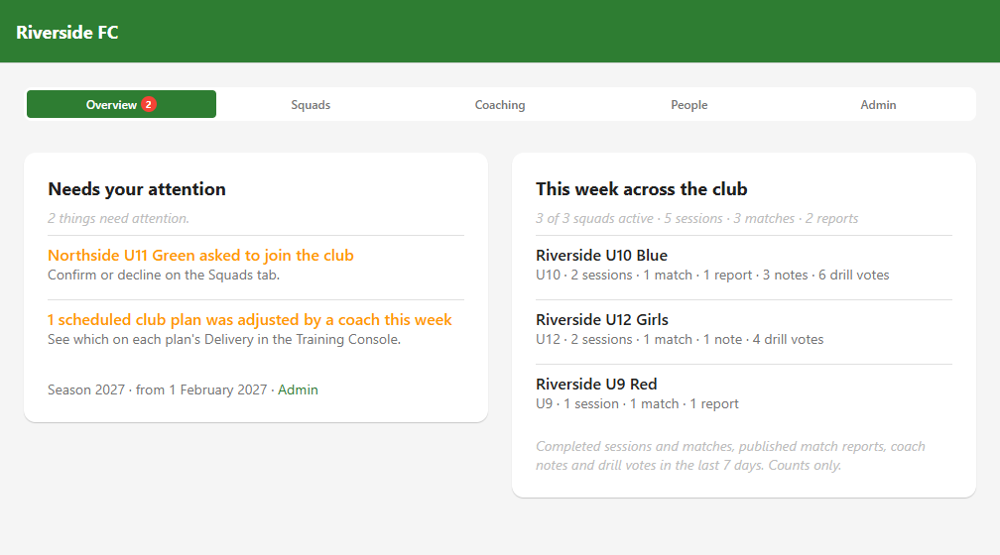
The Training Console
Coaching, then Training Console. Its tabs are Plans (your club plans and their schedules), Drills (the drill library, including your club's own drills), Sessions and Matches (every squad's, in one list).
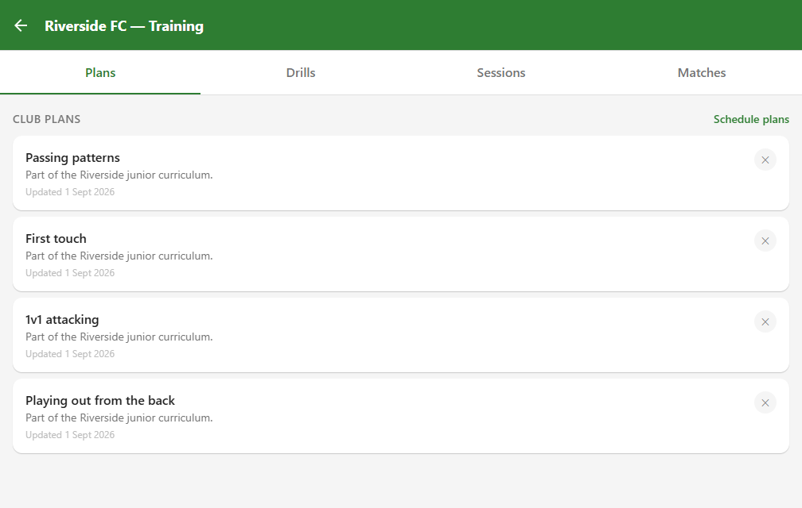
The computer version suits this work best: a bigger screen for building plans and reading across squads.
Your club's squads
The club area's Squads tab lists every squad in the club for the season, with its coaches.
- + Add Squad creates a squad that belongs to the club straight away. Then Invite Coach on it.
- A coach's own squad can ask to join your club: the coach picks your club in their squad's settings. It appears under "Squads awaiting confirmation". Tap it to look first, then Confirm (you can rename it to fit your club's naming) or Decline. Once confirmed, the squad sees your club's plans and drills, and its coaches get coach seats.
- The ⋯ menu on a squad: Squad settings, archive, detach from the club, or delete.
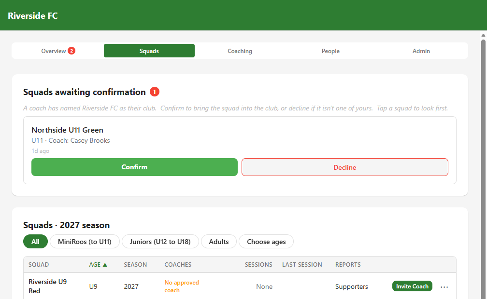
New squads take the club's Squad defaults (in Admin) for things like who sees ratings and match reports.
Coaches and seats
Coaches get seats automatically
When someone becomes a coach of one of your club's squads, by invite, invite code or an approved request to join, or when their squad joins your club, they get one of your licence's coach seats. They don't need their own subscription.
If you run out, they still join, and you get a "No coach seats left" notification. Free a seat up, or add seats, in Licensing.
Invite a coach
- From a squad: in the club area's Squads tab, tap Invite Coach on the squad, enter their email and tap Send Invite.
- From Licensing: Admin, Licensing, + Assign, choose Coach, enter the Email address and Squad, then Send Invite.
Either way they get an email with a code, and a seat when they join.
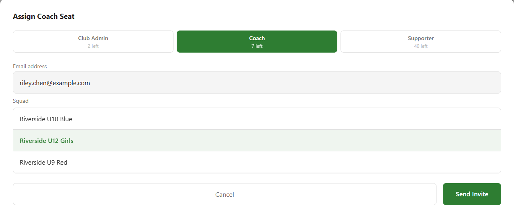
Seats in use
See Licensing for the seats in use, taking a seat back, and renewal.
People and checks
The club area's People tab lists every coach and admin: their roles, seat, squads, Working with Children Check and qualifications.
Verifying a Working with Children Check
Coaches enter their own (see Your Working with Children Check). To verify one:
- Tap the person's "WWCC" line.
- Check the number on the state register.
- Turn on Verified and Save.
Changing the scheme, number or expiry clears the tick. You can also enter a check for a coach yourself. Only numbers and dates are stored, never card images.
Coaching qualifications work the same way: tap the "Qualifications" line, and tick Verified after checking with Football Australia.
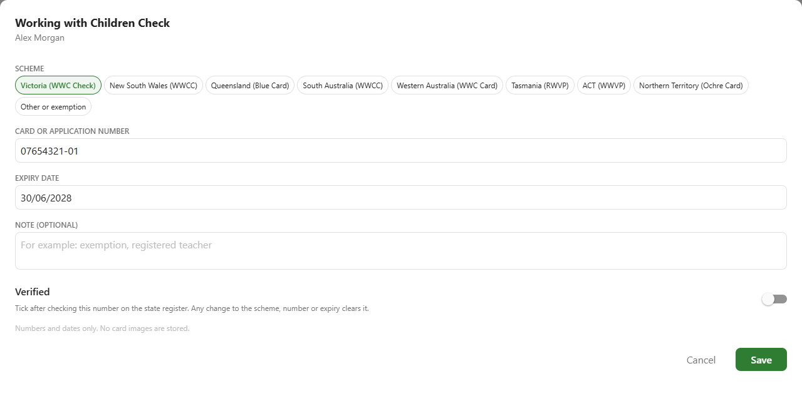
The Overview tab flags expired checks and seats with no check recorded.
Create a drill
Start the drill
In the Training Console's Drills tab, tap + New club drill. Its visibility is already set to Club with your club chosen, so every squad in your club will find it in their drill library. (Coaches can also make drills from their squad's Drills card with +.)
Fill it in
Work down the form:
- Title (required): short and clear, for example "3v2 attacking overload".
- Description: a one or two line overview: what the drill is for.
- Setup: the area, equipment and where players start. Each new line becomes a bullet point.
- Instructions: how the drill runs, step by step.
- Coaching Points: tap + Add coaching point for each thing the coach should look for or say.
- Variations: ways to make it easier or harder.
- Diagrams (up to five): Draw Diagram to draw it on a pitch (Draw a drill diagram), or Add Image / Add PDF for a picture or document you already have (10 MB each).
- Video Links: paste a link (for example YouTube) and tap Add.
- Level: Beginner, Intermediate or Advanced.
- Duration (min), Min Players and Max Players.
- Skill Focus: tag the skills it develops (open a group such as Technical, or search).
- Tactical Focus: tag any tactical ideas it covers.
- Visibility: leave it on Club for your club's squads.
- Tap Create Drill.
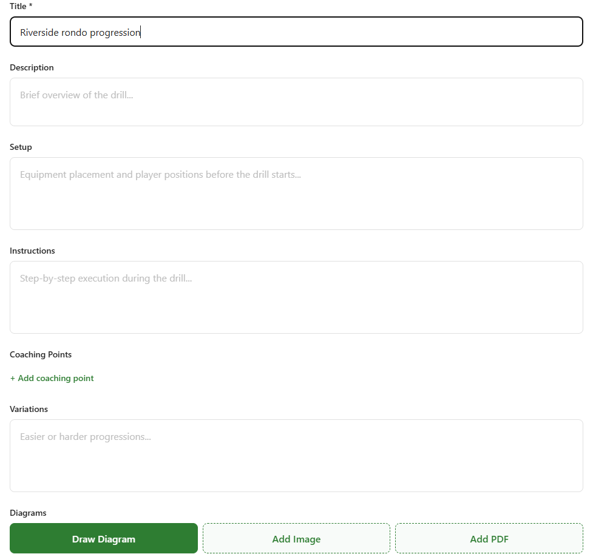
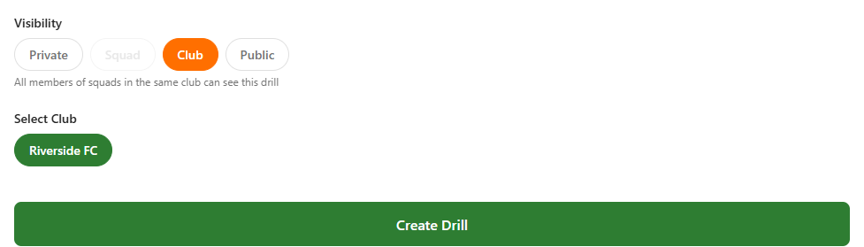
Tags matter: coaches find drills by level, skill and tactic, and the AI Session Planner uses them to pick drills.
Change it later
Open the drill and tap Edit Drill, change what you need, then Save Changes. Coaching points can be reordered, grouped under headings, or added from the club's coaching point library (From library). Your club's admins can edit or delete club drills, as well as the person who made them.
Draw a drill diagram
On a drill (new or existing), tap Draw Diagram.
1. Choose a starting point
Pick a ready-made set-up, such as a rondo, a small-sided box, a box with end zones or a channel, with or without example movement, or Start blank for an empty pitch. Everything can be moved afterwards.
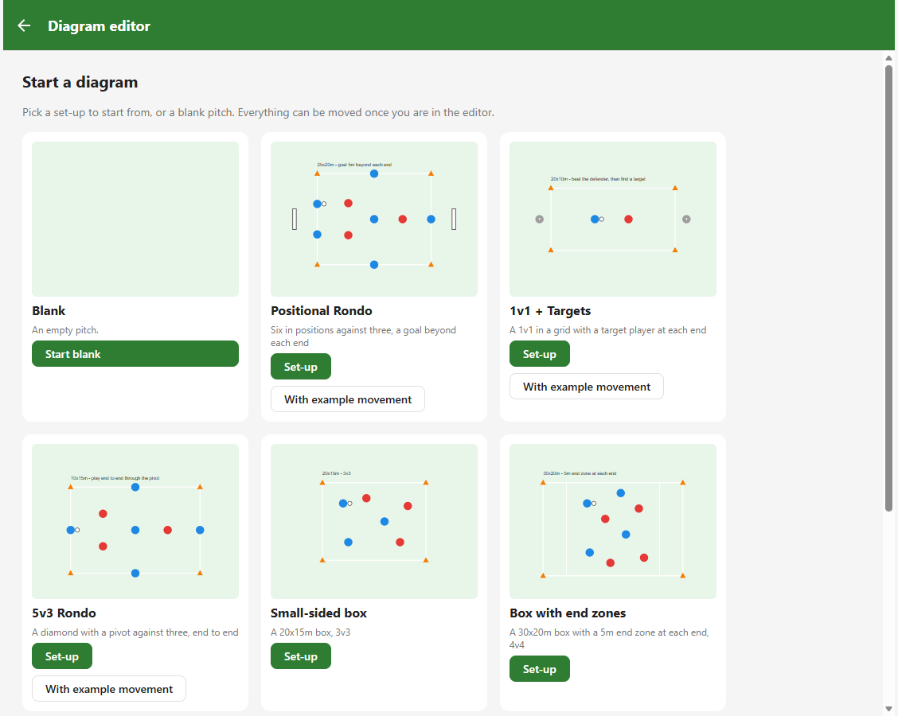
2. Draw
Choose a tool on the left, then click on the pitch:
- Players: Attacker (blue), Defender (red), Neutral (grey), Goalkeeper.
- Objects: Ball, Cone, Goal.
- Movement: drag to draw a Run (solid arrow), Pass (dashed) or Dribble (curved; drag its round handles to shape it).
- Areas: drag to draw an Area (with corner cones) or a Line.
- Text: a Label.
Select lets you move, resize or change things. Click something to change it in the panel on the right: a player's colour or number, an arrow's type, an area's cones. Duplicate and Delete are there too.
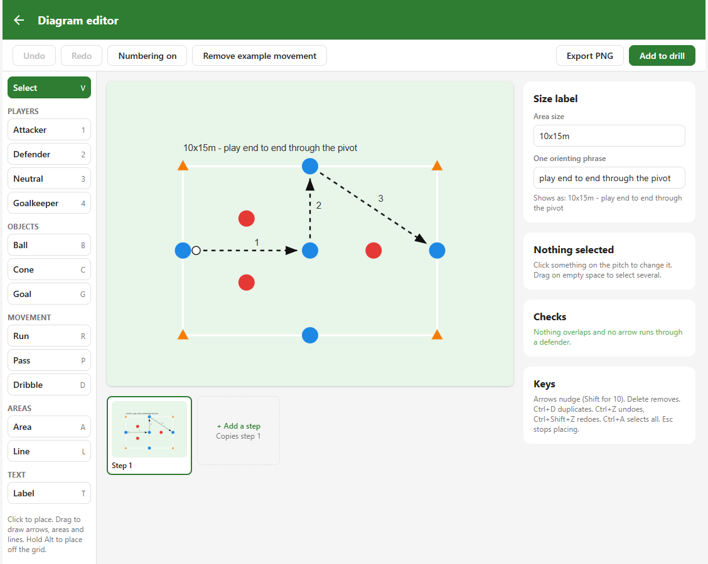
Size label: on the right, enter the area size (for example 25x20) and one short phrase (for example "play end to end"); it shows on the diagram.
Checks: the panel warns if players overlap or an arrow runs through a defender.
3. Add steps (optional)
To show how a drill develops, + Add a step copies the current picture as a new step to change. Earlier and Later reorder steps. Each step becomes one of the drill's five diagrams.
4. Save
Tap Save to drill (or Add to drill on a new drill). Each step is saved as a picture on the drill, and stays editable later from the computer.
Shortcuts: arrow keys nudge (Shift for bigger steps), Delete removes, Ctrl+D duplicates, Ctrl+Z undoes, Esc stops placing.
Create a club plan
- In the Training Console's Plans tab, tap +.
- Give it a Plan Title, and fill in the goals and focus.
- Tap + Add Drill for each drill; reorder them with ↑ and ↓.
- Under Visibility, choose "All squads in <your club>" or Specific squads.
- Tap Save Plan.
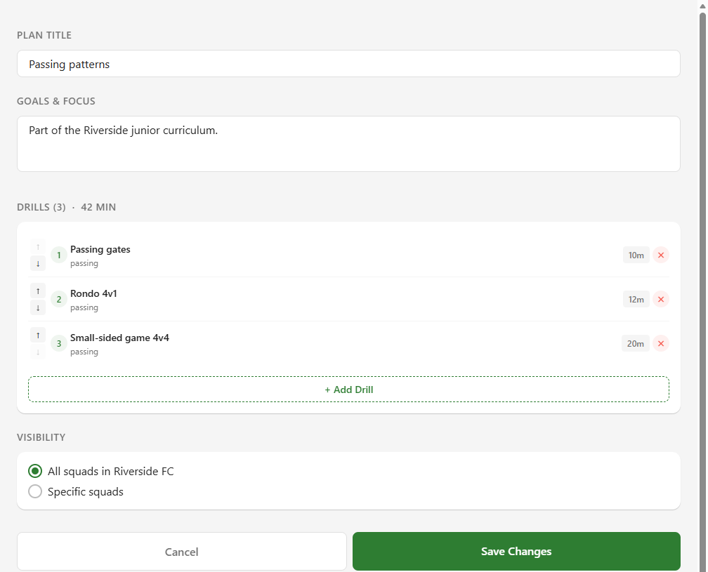
Coaches can load it into a session with Load Club Plan, or you can schedule it onto their sessions for them: see Schedule plans onto sessions.
Schedule plans onto sessions
Once your club has at least one plan, the Training Console's Plans tab shows Schedule plans beside "Club Plans".
- Choose a Block: Pre-season, In-season or Other (and name it).
- Set Starts on.
- Add the plans under "Plans, in session order"; reorder with ↑ and ↓. A plan can appear more than once.
- Tick the Squads. Filter by age group (MiniRoos (to U11), Juniors (U12 to U18), Adults) and use Select all shown.
- Tap "Schedule for N squads".
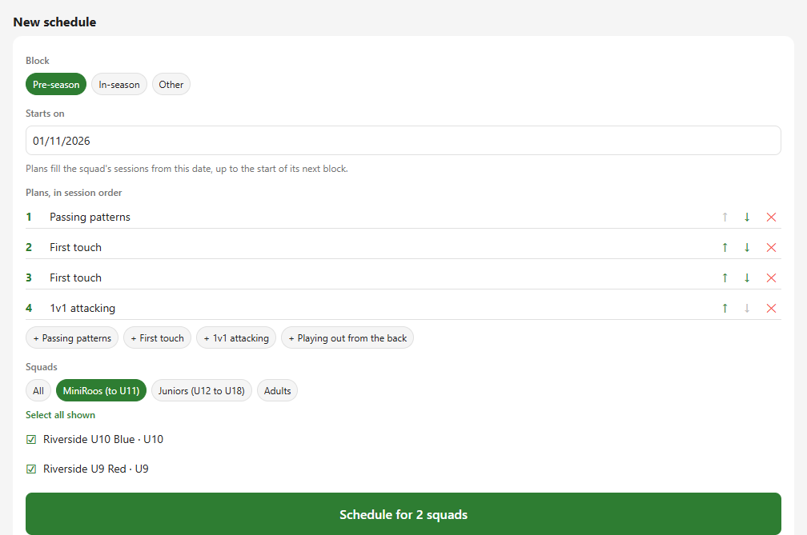
What happens next
- Each plan lands on the squad's next session from the start date, in date order, including sessions created later. Coaches get a "Club plans added" notification.
- If a coach had already planned a session, you're asked: Push to next session or Skip, then Apply.
- If a session is cancelled (rain, say), its plan moves to the next session and the rest move along, into the next block if need be. A block's plans never start before its start date.
- If a coach changes a plan, it stays theirs: later changes to the schedule leave it alone. You get a "Club plan adjusted" notification the first time.
Your schedules
They're listed under Scheduled. If a block has plans still waiting for a session, it says so ("1 plan with no session yet") and they go on the squad's next new sessions. Remove takes a block's plans off future sessions the coach hasn't changed.
See how it's going
Each plan's Delivery
Open a club plan in the Training Console. Its Delivery section shows:
- how many squads have loaded it, how many sessions it's been run in, and the attendance;
- where it's scheduled next, and which coaches adjusted it;
- each squad's sessions, completed sessions and attendance;
- "Drill feedback from the coaches who ran it": 👍 and 👎 counts per drill, with their notes;
- the coach notes from those sessions.
Across the club
- The Overview tab flags plans a coach adjusted this week.
- The console's Sessions and Matches tabs show a "Reflection" tag where a coach has written a reflection. Open the session or match to read it.
- Notifications: "Club plan adjusted" when a coach first changes a scheduled plan.
Club theory and position profiles
Club theory
Coaching, then Club Theory. Every squad in the club sees it on its Club Theory card.
- Playing Philosophy: how the club wants all its teams to play: shape, pressing, possession. The AI uses it in match prep and analysis.
- Club Values: the character, conduct and culture you expect.
- Football Theory: + Add New Theory adds a topic (for example "High press triggers") with a Heading and Theory Notes. After creating it, add up to five images or PDFs. Reorder topics with ↑ and ↓.
Position profiles
Coaching, then Position Profiles. Each position (goalkeeper, defender, midfielder, forward roles) has a standard profile of what the position asks of a player. Your club can:
- choose which squads see each section, using "Squad Access";
- add its own words for each age band (MiniRoos, Juniors, Adults): tap a band, write your note, and choose whether it shows under the standard text or replaces it. The standard text is never changed, so you can switch back.
Coaches see your notes as "Club Notes" on the position.
Licensing
In the club area, open Admin, then Licensing.
What you'll see
- "Club Licence": when it expires (with days remaining once you're within 30 days).
- Seat counts: "Club Admin Seats", "Coach Seats" and "Supporter Seats", each "N of M used". Invites not yet accepted count as used until you revoke them.
- "Club Admin Assignments" and "Coach Assignments": each person, and whether they've "✓ Accepted" or are "⏳ Pending". Tap an accepted person to record or verify their Working with Children Check, or their qualifications.
- "Supporter Seats by Squad": supporter seats in use for each squad.
Give someone a seat
Coaches get a coach seat automatically when they join one of your squads; see Coaches and seats. To invite someone directly:
- Tap + Assign beside the kind of seat.
- Choose Club Admin, Coach or Supporter (each shows how many are left).
- Enter their Email address; for a coach or supporter, choose the Squad (and for a supporter, optionally the player).
- Tap Send Invite. On a computer you'll confirm your password first.
They get an email with a code; their access is included, with no subscription to pay.
Take a seat back
Tap Revoke beside the person, and confirm. If they'd already joined, this also removes them from the squad (or, for a club admin, from the club).
Renewal
The club area reminds you as renewal approaches. If the licence lapses, everything keeps working for a short grace period ("Grace period ends …"); after that, seat holders move to the free version until it's renewed. Nothing recorded is lost. To renew, add seats or arrange a licence, email info@bworthyintelligence.com.
Club admins
The Admin tab's "Club Admins" card lists everyone who can run the club in the app: see every squad, manage plans, drills, seats and checks.
Add a club admin
There are two ways:
- Send them a seat: Admin, Licensing, + Assign, choose Club Admin, enter their email and Send Invite. See Licensing.
- Approve their request: if someone asks to join the club as an admin, their request appears under "Join Requests" on the Admin tab. Tap Approve (or Deny).
Remove a club admin
On the "Club Admins" card, tap ⋯ beside them, then Remove from Club and confirm. You can't remove yourself.
The club season
The club season decides which squads count as "this season's". Nothing in any squad changes when you set it.
Set the season
- On the Admin tab, tap Season.
- Enter a Season label (for example 2027) and the First day (DD/MM/YYYY).
- Tap Save.
Until you set one, the app assumes the season starts on 1 November.
Squads that haven't started the new season
Squads whose coaches haven't rolled over to the new season move under "View previous seasons" on the Squads tab, and the Overview flags them ("N squads have not started the … season").
Tap Nudge coaches beside a squad to send its coaches a reminder: "Start your squad's new season from the squad page when you are ready." Coaches roll their own squads over: see Start a new season.
Squad defaults
On the Admin tab, tap Squad defaults. These apply when a squad is created in the club, or a coach's squad is confirmed into it. Squads already in the club keep their own settings (change those from the Squads tab, ⋯, Squad settings).
Tap a row to choose:
| Setting | What it controls | Choices (app default first) |
|---|---|---|
| Skill Ratings | Who sees player skill ratings and match ratings | "Coaches Only", "Player/Supporter Visibility", "Disabled" |
| Impact Analytics | Who sees on-pitch impact analytics | "Coaches Only", "Player/Supporter Visibility", "Disabled" |
| Match Reports | Where new match reports go (a coach can still change any single report) | "Supporters", "Coaches only" |
| Lineup Diagram Labels | What shows on players in line-up diagrams | "Player Numbers", "Player Initials" |
Club readiness report
On the Admin tab, tap Club readiness. It's built from your club's records for the season: counts and squads only, no names, so it can go to your committee or federation as it stands.
It shows:
- Age categories fielded: squads and coaches in each age group.
- Squads: coaches and delivery: each squad's coaches, sessions completed and matches.
- Coaching qualifications: how many coaches have a recorded qualification, how many are verified, and the levels held.
- Working with Children Checks: current, expiring soon, expired and not recorded.
- Club football theory and plans: whether your playing philosophy and club values are written, and how many club plans you have.
Red marks a gap; amber marks something partly covered or not yet recorded.
The PDF
Tap Club report PDF. When it's ready, Open, Share or Save it. Make a new one any time; each replaces the last.
Following your child's squad
Joining
Your child's coach invites you from your child's page in the app. You get an email: "Your SquadManager Pro invite to follow <your child>".
- Tap Open App & Join as Supporter in the email (on a computer, use "Use the web version").
- Create an account with the email address the invite was sent to, or sign in.
- If asked how you'll use the app, choose Supporter or parent.
- Your code is filled in: tap Activate.
You can also enter the code yourself: ☰ menu, Enter Invite Code (on a phone).
Your home screen
Your home shows My Player: your child, what's NEXT UP (training and matches), RECENT RESULTS, and links to the squad's Squad Stats, Training, Matches and Squad Theory.
What you can see
- Your child's profile (tap their card): details, training attendance, match stats and positions played, the coach's season review paragraph, and session notes the coach shares.
- The squad's schedule and results: training sessions and matches.
- Notes: the squad's public notes, and any note written for your child. You can react and comment on public notes. Coaches-only notes and coaches' reflections stay with the coaches.
- Match reports the coach shares after a game.
- Live matches: when the coach records a game live, tap 👁 Watch Live on the match to follow the score and events as they happen. See Subscriptions and Club Licences for how many live matches are free.
Notifications
Choose what you're told about (match results, reminders, live goals) in ☰ menu, Notification Preferences.
Your data
On the squad page, 📦 Export squad data saves your child's matches, minutes, attendance and public notes as spreadsheet files.
Getting help
- Your club first. If your squad is part of a club, your club admin or coaching coordinator can help with plans, seats and invites.
- Ideas and problems: open the ☰ menu and tap Give Feedback. You'll see what others have suggested, and can add your own.
- Anything else: email info@bworthyintelligence.com.
A safety concern about a child?
Open the ☰ menu and tap Child Safety Concern. If a child is in immediate danger, call 000.